The one-minute answerAng sagot sa isang minutoAng tubag sa usa ka minutoIng sagot king metung a minutu
Your kidneys do not work alone. All day they trade signals with your heart, lungs, liver, gut, bones, blood-making bone marrow, brain and muscles, through blood flow, hormones, nerves and the substances they clear. When the kidneys are hurt, either suddenly (acute kidney injury, AKI) or slowly over years (chronic kidney disease, CKD), the other organs feel it, and a struggling heart or liver can strain the kidneys in return. This is why your doctor checks more than one organ, and why some treatments protect several organs at once.Hindi nag-iisa ang mga bato (kidney) mo sa trabaho. Buong araw silang nakikipagpalitan ng senyales sa puso, baga, atay, bituka, buto, bone marrow na gumagawa ng dugo, utak at kalamnan, sa pamamagitan ng daloy ng dugo, hormone, nerve at mga sangkap na inaalis nila. Kapag nasaktan ang bato, biglaan man (acute kidney injury, AKI) o dahan-dahan sa loob ng maraming taon (chronic kidney disease, CKD), nadadamay ang ibang organ, at ang nanghihinang puso o atay ay puwede ring magpahirap sa bato. Kaya hindi lang iisang organ ang sinusuri ng doktor mo, at kaya may mga gamot na sabay-sabay na nagpoprotekta sa ilang organ.Dili mag-inusara ang imong mga kidney sa trabaho. Tibuok adlaw silang nagbayloay og senyales sa kasingkasing, baga, atay, tinai, bukog, bone marrow nga naghimo og dugo, utok ug kaunoran, pinaagi sa dagan sa dugo, hormone, nerve ug mga butang nga ilang gitangtang. Kung masamdan ang kidney, kalit man (acute kidney injury, AKI) o hinay-hinay sulod sa daghang tuig (chronic kidney disease, CKD), maapektohan ang ubang organ, ug ang naluyang kasingkasing o atay makapalisod usab sa kidney. Mao nga dili lang usa ka organ ang gisusi sa imong doktor, ug mao nga adunay mga tambal nga dungan nga nanalipod sa pipila ka organ.E la magdili-dili magobra deng batu (kidney) mu. Mabilug a aldo makipagpalitan lang senyales king pusu, baga, ate, bituka, butul, bone marrow a gagawang daya, utak at laman (muscle), kapamilatan ning agus ning daya, hormone, nerve at deng bage a lalakwan da. Nung masaktan ing batu, bigla man (acute kidney injury, AKI) o banayad king lub da ring dakal a banwa (chronic kidney disease, CKD), madamay la ring aliwang organ, at ing manyinang pusu o ate malyari na namang pasakitan ing batu. Anya e mu metung a organ ing susurian ning doktor mu, at anya atin gamut a sabe-sabeng mamrotekta kareng pilan a organ.
Get urgent care nowMagpatingin agad sa emergencyPagpatan-aw dayon sa emergencyMagpatingin ka agad king emergency
Go to the emergency room if you have kidney disease, or were recently in hospital for a kidney problem, and you notice trouble breathing or breathlessness when lying flat, chest pain, very little or no urine, sudden swelling, confusion or unusual sleepiness, fainting, black or bloody stools, vomiting blood, or a very fast or irregular heartbeat.Pumunta sa emergency room kung may sakit ka sa bato, o kagagaling mo lang sa ospital dahil sa problema sa bato, at napansin mo ang hirap sa paghinga o hingal kapag nakahiga, sakit sa dibdib, napakakaunti o walang ihi, biglaang pamamaga, pagkalito o kakaibang antok, pagkahimatay, maitim o may dugong dumi, pagsusuka ng dugo, o napakabilis o iregular na tibok ng puso.Adto sa emergency room kung aduna kay sakit sa kidney, o bag-o ka lang gikan sa ospital tungod sa problema sa kidney, ug namatikdan nimo ang kalisod sa pagginhawa o hangos kung maghigda, sakit sa dughan, gamay kaayo o walay ihi, kalit nga paghubag, kalibog o dili kasagarang kakatulgon, pagkaluya o pagkawala sa panimuot, itom o dugoon nga hugaw, pagsuka og dugo, o paspas kaayo o dili regular nga pitik sa kasingkasing.Munta ka king emergency room nung atin kang sakit king batu, o bayu ka pa mung menibat king ospital uli ning problema king batu, at apansinan mu ing kasakitan king pangisnawa o pangingal nung makakera, sakit king salu, dipaning ditak o alang imi, biglang pamagbulkas (swelling), pamaglito o e karaniwan a tundu, pamagkahimatay, matuling o maki-dayang takla, pamagmulua daya, o masikan a masikan o e regular a pamitik ning pusu.
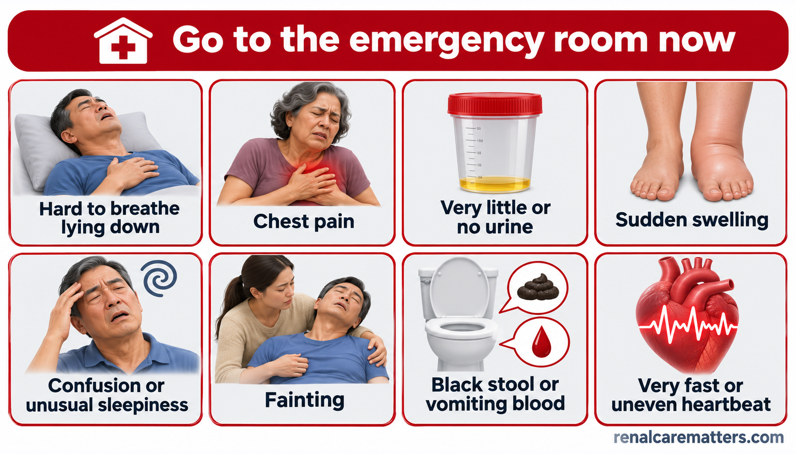
If you have kidney disease and notice any of these signs, go to the emergency room now.Kung may sakit ka sa bato at napansin mo ang alinman sa mga senyales na ito, pumunta agad sa emergency room.Kung aduna kay sakit sa kidney ug namatikdan nimo ang bisan asa niining mga timaan, adto dayon sa emergency room.Nung atin kang sakit king batu at apansinan mu ing nanu man kareting tanda, munta ka agad king emergency room.
Your kidneys are part of a teamBahagi ng isang team ang mga bato moBahin sa usa ka team ang imong mga kidneyKayabe la king metung a team deng batu mu
Think of your body as a barangay where every household depends on its neighbors. The kidneys are the household that manages water, salt and waste for everyone. They also send out instructions: one hormone tells the bone marrow to make red blood cells, another activates vitamin D for the bones, and another helps set blood pressure. In return, the kidneys depend on the heart for steady blood flow, on the lungs for oxygen, and on the liver and gut to handle food and medicines.Isipin ang katawan mo na parang isang barangay kung saan umaasa ang bawat bahay sa mga kapitbahay. Ang mga bato ang bahay na namamahala sa tubig, asin at dumi para sa lahat. Nagpapadala rin sila ng utos: isang hormone ang nagsasabi sa bone marrow na gumawa ng pulang selula ng dugo, isa ang nagpapagana ng vitamin D para sa buto, at isa pa ang tumutulong magtakda ng presyon ng dugo. Bilang kapalit, umaasa ang bato sa puso para sa tuloy-tuloy na daloy ng dugo, sa baga para sa oxygen, at sa atay at bituka para asikasuhin ang pagkain at gamot.Hunahunaa ang imong lawas sama sa usa ka barangay diin ang matag balay nagsalig sa mga silingan. Ang mga kidney mao ang balay nga nagdumala sa tubig, asin ug hugaw para sa tanan. Nagpadala usab sila og mga sugo: usa ka hormone ang nagsulti sa bone marrow nga maghimo og pulang selula sa dugo, lain ang nagpaaktibo sa vitamin D para sa bukog, ug lain pa ang nagtabang sa pagtakda sa presyon sa dugo. Isip balos, nagsalig ang kidney sa kasingkasing para sa makanunayong dagan sa dugo, sa baga para sa oxygen, ug sa atay ug tinai aron atimanon ang pagkaon ug tambal.Isipan me ing katawan mu antimong metung a barangay nung nu ing balang bale manasa ya kareng kasiping bale na. Deng batu ilang bale a mamanibala king danum, asin at dinat para kareng ngan. Magpadala la namang utus: metung a hormone ing sasabi king bone marrow a gumawa yang malutung selula ning daya, metung ing magpagana king vitamin D para king butul, at metung pa ing sasaup king presyon ning daya. Kapalit na niti, manasa ya ing batu king pusu para king tuluy-tuluy a agus ning daya, king baga para king oxygen, at king ate at bituka ban asikasuan ing pamangan at gamut.
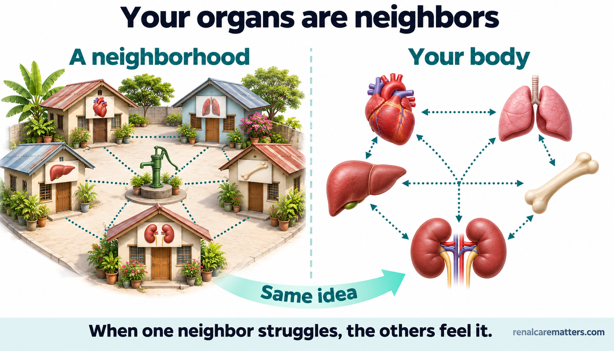
Your organs depend on each other the way neighbors do. When one struggles, the others feel it.Umaasa ang mga organ mo sa isa't isa gaya ng magkakapitbahay. Kapag nahirapan ang isa, nadarama ito ng iba.Ang imong mga organ nagsalig sa usag usa sama sa mga silingan. Kung maglisod ang usa, mabati kini sa uban.Deng organ mu manasa la king balang metung antimo reng mikakasiping bale. Nung masakitan ya ing metung, aramdaman da reng aliwa.
In real terms, organs talk in five ways: by pressure and blood flow, by hormones carried in the blood, by nerve signals, by the substances they make or clear, and by the immune system. A problem in one channel can travel. Too much fluid backs up into the lungs. Waste the kidneys cannot clear reaches the brain. A weak heart pump lowers the flow the kidneys need to filter.Sa totoong katawan, limang paraan ang pag-uusap ng mga organ: sa presyon at daloy ng dugo, sa mga hormone na dala ng dugo, sa senyales ng nerve, sa mga sangkap na ginagawa o inaalis nila, at sa immune system. Ang problema sa isang daanan ay puwedeng kumalat. Ang sobrang tubig ay umaatras papunta sa baga. Ang duming hindi maalis ng bato ay umaabot sa utak. Ang mahinang bomba ng puso ay nagpapababa ng daloy na kailangan ng bato para makapagsala.Sa tinuod nga lawas, lima ka paagi ang pag-istoryahanay sa mga organ: pinaagi sa presyon ug dagan sa dugo, sa mga hormone nga dala sa dugo, sa senyales sa nerve, sa mga butang nga ilang gihimo o gitangtang, ug sa immune system. Ang problema sa usa ka agianan mahimong mokaylap. Ang sobrang tubig moatras ngadto sa baga. Ang hugaw nga dili matangtang sa kidney moabot sa utok. Ang huyang nga bomba sa kasingkasing makapaubos sa dagan nga gikinahanglan sa kidney aron makasala.King tutung katawan, lima lang paralan ing pamisabi-sabi da ring organ: king presyon at agus ning daya, kareng hormone a dadalan ning daya, king senyales ning nerve, kareng bage a gagawan o lalakwan da, at king immune system. Ing problema king metung a dalan malyari yang kumalat. Ing sobrang danum mamalik ya papunta king baga. Ing dinat a e na alako ning batu miraras ya king utak. Ing manyinang bomba ning pusu papababan ne ing agus a kailangan ning batu ban makapagsala.
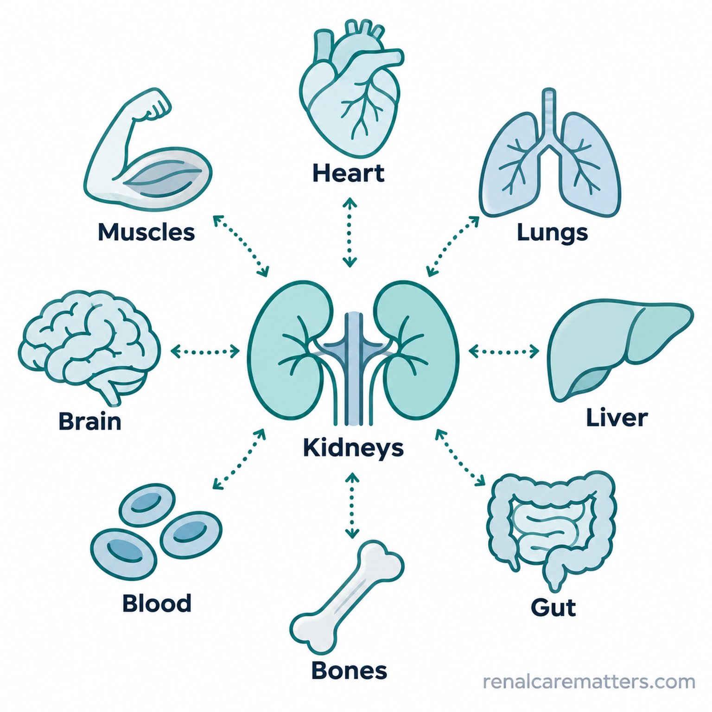
The kidneys sit at the center of a two-way network. Every arrow runs in both directions: each organ affects the kidneys, and the kidneys affect each organ.Nasa gitna ng dalawahang-direksyong network ang mga bato. Bawat arrow ay pabalik-balik: bawat organ ay nakaaapekto sa bato, at ang bato ay nakaaapekto sa bawat organ.Ang mga kidney anaa sa tunga sa network nga duha ang direksyon. Ang matag arrow balik-balik: ang matag organ makaapekto sa kidney, ug ang kidney makaapekto sa matag organ.Deng batu atyu la king libutad ning network a adwa ing direksyon. Ing balang arrow papunta at pabalik: ing balang organ makaapektu ya king batu, at ing batu makaapektu ya king balang organ.
Why did my kidneys get worse when my heart was sick?Bakit lumala ang bato ko noong nagkasakit ang puso ko?Nganong migrabe ang akong kidney sa dihang nasakit ang akong kasingkasing?Bakit lumala ya ing batu ku inyang mesakit ya ing pusu ku?
I first met her when her husband started dialysis. He had lived with high blood pressure that was hard to control, and he later developed diabetes and heart disease. After he died, she became my patient. She was living with diabetes and high blood pressure, and she had gained weight.Una ko siyang nakilala noong nagsimulang mag-dialysis ang kanyang asawa. Matagal itong nagkaroon ng mataas na presyon na mahirap kontrolin, at kalaunan ay nagkaroon din ito ng diabetes at sakit sa puso. Nang pumanaw ito, siya naman ang naging pasyente ko. May diabetes at mataas na presyon siya, at tumaba siya.Una nako siyang nahimamat sa dihang nagsugod og dialysis ang iyang bana. Dugay na kining may taas nga presyon nga lisod kontrolon, ug sa kadugayan naangkon usab niini ang diabetes ug sakit sa kasingkasing. Human kini namatay, siya na ang nahimong akong pasyente. Aduna siyay diabetes ug taas nga presyon, ug nitambok siya.Mumuna ke pengakilala inyang megumpisa yang mag-dialysis ing asawa na. Malambat neng atin matas a presyon a masakit kontrolan, at kaibat miyabe pa ing diabetes at sakit king pusu. Inyang mete ya, iya naman ing meging pasyenti ku. Atin yang diabetes at matas a presyon, at tinaba ya.
When she started getting short of breath, I looked more closely at her heart. Her blood pressure could run very high and then drop low. The evaluation found heart disease, and I referred her to cardiology. During one severe episode of breathlessness, she needed intensive care and a breathing tube. Over time, her creatinine, a blood test we use to check kidney function, rose. She eventually developed stage 4 chronic kidney disease. After discussing heart surgery with her specialists, she chose to continue with medical treatment.Nang magsimula siyang hingalin, mas sinuri ko nang mabuti ang kanyang puso. Ang presyon niya ay puwedeng tumaas nang husto at pagkatapos ay bumaba nang mababa. Nakita sa pagsusuri na may sakit siya sa puso, kaya ini-refer ko siya sa cardiology. Sa isang malubhang atake ng hingal, kinailangan niya ng intensive care at ng tubo para sa paghinga. Sa paglipas ng panahon, tumaas ang kanyang creatinine, isang blood test na ginagamit namin para tingnan ang lagay ng bato. Kalaunan ay umabot siya sa stage 4 chronic kidney disease. Matapos pag-usapan ang operasyon sa puso kasama ang kanyang mga espesyalista, pinili niyang ipagpatuloy ang gamutan sa pamamagitan ng mga gamot.Sa dihang nagsugod siya og hangos, gisusi nako pag-ayo ang iyang kasingkasing. Ang iyang presyon mahimong mosaka pag-ayo ug unya moubos. Nakita sa pagsusi nga aduna siyay sakit sa kasingkasing, busa gi-refer nako siya sa cardiology. Sa usa ka grabeng higayon sa hangos, nagkinahanglan siya og intensive care ug tubo alang sa pagginhawa. Sa paglabay sa panahon, misaka ang iyang creatinine, usa ka blood test nga among gigamit sa pagsusi sa kidney. Sa kadugayan, miabot siya sa stage 4 chronic kidney disease. Human mahisgoti ang operasyon sa kasingkasing uban sa iyang mga espesyalista, gipili niya nga ipadayon ang pagtambal pinaagi sa mga tambal.Inyang megumpisa yang hingalan, sinuri ke pang masalese ing pusu na. Ing presyon na malyari yang tumas masyadu at kaibat magbaba yang mababa. Ikit king pamanyuri a atin yang sakit king pusu, anya ni-refer ke king cardiology. King metung a malalang atake ning hingal, kinailangan na ing intensive care at tubo para king pamangisnawa. Kabang lalabas ing panaun, tinas ya ing creatinine na, metung a blood test a gagamitan mi para lawen ing lagay ning batu. Kaibat, miras ya king stage 4 chronic kidney disease. Kaibat dang pisabyan ing operasyon king pusu kayabe da reng espesyalista na, pinili nang isundu ing pamanulu kapamilatan da reng gamut.
Years later, she asked me how a problem in her heart could affect her kidneys.Makalipas ang ilang taon, tinanong niya ako kung paano nakaaapekto sa kanyang bato ang problema sa kanyang puso.Paglabay sa pipila ka tuig, gipangutana ko niya kung giunsa pag-apektar sa problema sa iyang kasingkasing ang iyang kidney.Kaibat ning pilan a banwa, kitnan na ku nung makananu yang makaapektu king batu na ing problema king pusu na.
I explained that the kidneys need blood to reach them and room for it to drain away. Very low blood pressure can reduce the blood reaching them. Pressure that backs up in the veins can also make it harder for the kidneys to filter. The effect goes both ways. When the kidneys have trouble clearing extra salt and water, the fluid can raise blood pressure and make it harder for the heart to handle that volume. Diabetes and long-standing high blood pressure can damage both organs over time.Ipinaliwanag ko na kailangan ng bato na may dugong dumarating dito at may daan para makalabas ito. Kapag sobrang baba ng presyon, puwedeng mabawasan ang dugong nakararating sa bato. Kapag umaatras naman ang presyon sa mga ugat (veins), mas nahihirapan ding magsala ang bato. Dalawahan ang epekto. Kapag nahihirapan ang bato na ilabas ang sobrang asin at tubig, puwedeng tumaas ang presyon dahil sa naipong tubig at mas mahirapan ang puso na kayanin ang dami nito. Ang diabetes at matagal nang mataas na presyon ay puwedeng makasira sa dalawang organ sa paglipas ng panahon.Gipatin-aw nako nga ang kidney nagkinahanglan og dugo nga moabot niini ug agianan aron makagawas kini. Ang sobra ka ubos nga presyon makapakunhod sa dugo nga moabot sa kidney. Ang presyon nga moatras sa mga ugat (veins) makapalisod usab sa pagsala sa kidney. Duha ka direksyon ang epekto. Kung maglisod ang kidney sa pagpagawas sa sobrang asin ug tubig, ang natigom nga tubig makapataas sa presyon ug makapalisod sa kasingkasing sa pagdala niana nga gidaghanon. Ang diabetes ug dugay na nga taas nga presyon makadaot sa duha ka organ sa paglabay sa panahon.Pepaliwanag ku a kailangan ning batu ing daya a datang kaya at dalan para makalwal ya iti. Nung masyadu yang mababa ing presyon, malyari yang mabawasan ing daya a darasan king batu. Nung aatras ya naman ing presyon kareng uyat (veins), lalu yang masakitan ing batu a magsala. Adwa ing direksyon ning epektu. Nung masakitan ya ing batu a ilwal ing sobrang asin at danum, ing metipun a danum malyari neng patasan ing presyon at lalu yang masakitan ing pusu a dalan ing dakal a ita. Ing diabetes at malambat nang matas a presyon malyari dong siran deng adwang organ kabang lalabas ing panaun.
That is why I look at her breathing, blood pressure, weight, and kidney tests together. When one changes, it helps me know what to check next.Kaya sabay-sabay kong tinitingnan ang kanyang paghinga, presyon, timbang, at mga test sa bato. Kapag may nagbago sa isa, natutulungan akong malaman kung ano ang susunod na dapat suriin.Mao nga dungan nakong tan-awon ang iyang pagginhawa, presyon, timbang, ug mga test sa kidney. Kung adunay mausab sa usa, makatabang kini kanako nga mahibal-an kung unsay sunod nga susihon.Anya misasabe kung lalawen ing pamangisnawa na, presyon, timbang, at deng test king batu. Nung atin mibayu king metung, makasaup ya kanaku para abalu ku nung nanu ing tutuking dapat suriin.
Who talks to the kidneys, and what they saySino ang kausap ng mga bato, at ano ang sinasabi nilaKinsa ang kaistorya sa mga kidney, ug unsay ilang giingonNinu ing kasabi da ring batu, at nanu ing sasabyan da
Each row below is one conversation. Read across to see what each side gives, what goes wrong, and what your care team watches.Bawat hanay sa ibaba ay isang usapan. Basahin pahalang para makita kung ano ang ibinibigay ng bawat panig, ano ang nagkakamali, at ano ang binabantayan ng care team mo.Ang matag laray sa ubos usa ka panag-istoryahanay. Basaha pahigda aron makita kung unsay ihatag sa matag kilid, unsay masayop, ug unsay gibantayan sa imong care team.Ing balang hanay king lalam metung yang pamisabi-sabi. Basan yang pahalang ban akit mu nung nanu ing ibibye ning balang panig, nanu ing mamali, at nanu ing babanten ning care team mu.
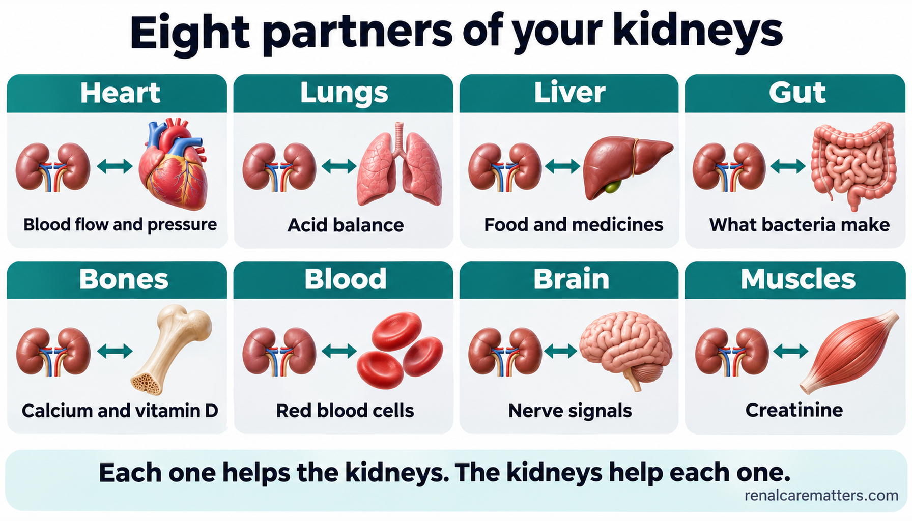
Each partner organ shares one job with the kidneys. The table below explains each one.Bawat katuwang na organ ay may isang trabahong kasalo ang bato. Ipinapaliwanag ng talahanayan sa ibaba ang bawat isa.Ang matag kauban nga organ adunay usa ka trabaho nga giambitan sa kidney. Ang talaan sa ubos nagpatin-aw sa matag usa.Ing balang kayabeng organ atin yang metung a obrang kayabe na ing batu. Ing talaan king lalam ipaliwanag na ing balang metung.
| Partner organKatuwang na organKauban nga organKayabeng organ | How they help each otherPaano sila nagtutulunganGiunsa nila pagtinabangayMakananu lang misasaup | When trouble startsKapag nagkaproblemaKung magsugod ang problemaNung magumpisa ing problema |
|---|---|---|
| Heart and blood vesselsPuso at mga ugatKasingkasing ug mga ugatPusu at deng uyat | The heart pumps blood to the kidneys. The kidneys control salt, water and blood pressure for the heart.Nagbobomba ang puso ng dugo papunta sa bato. Kinokontrol ng bato ang asin, tubig at presyon para sa puso.Ang kasingkasing mobomba og dugo ngadto sa kidney. Ang kidney mokontrol sa asin, tubig ug presyon para sa kasingkasing.Ing pusu bobomba yang daya papunta king batu. Ing batu kokontrolan ne ing asin, danum at presyon para king pusu. | A weak heart or backed-up veins slow the kidneys. Weak kidneys hold fluid and potassium that strain the heart. Checked: blood pressure, weight, swelling, creatinine, potassium.Ang mahinang puso o naiipong dugo sa ugat ay nagpapabagal sa bato. Ang mahinang bato ay nag-iipon ng tubig at potassium na nagpapahirap sa puso. Sinusuri: presyon, timbang, pamamaga, creatinine, potassium.Ang huyang nga kasingkasing o natigom nga dugo sa ugat makapahinay sa kidney. Ang huyang nga kidney magtigom og tubig ug potassium nga makapalisod sa kasingkasing. Susihon: presyon, timbang, paghubag, creatinine, potassium.Ing manyinang pusu o ing dayang titipun king uyat papabagalan ne ing batu. Ing manyinang batu titipunan ne ing danum at potassium a magpasakit king pusu. Susurian: presyon, timbang, pamagbulkas, creatinine, potassium. |
| LungsBagaBagaBaga | The lungs remove carbon dioxide, an acid gas. The kidneys remove other acids. Together they keep the blood from becoming too acidic.Inaalis ng baga ang carbon dioxide, isang maasim na gas. Inaalis ng bato ang ibang asido. Magkasama nilang pinipigilang maging sobrang asido ang dugo.Ang baga motangtang sa carbon dioxide, usa ka aslom nga gas. Ang kidney motangtang sa ubang asido. Mag-uban silang nagpugong nga mahimong aslom kaayo ang dugo.Ing baga lalakwan ne ing carbon dioxide, metung a maslam a gas. Ing batu lalakwan ne ing aliwang asidu. Misasabe dang pipigilan a maging sobrang maslam ing daya. | Extra fluid from weak kidneys can fill the lungs and cause breathlessness. A severe lung illness lowers the oxygen reaching the kidneys. Checked: breathing, oxygen level, fluid in and out.Ang sobrang tubig dahil sa mahinang bato ay puwedeng pumuno sa baga at magdulot ng hingal. Ang malubhang sakit sa baga ay nagpapababa ng oxygen na umaabot sa bato. Sinusuri: paghinga, antas ng oxygen, tubig na pumapasok at lumalabas.Ang sobrang tubig tungod sa huyang nga kidney mahimong mopuno sa baga ug magpahangos. Ang grabeng sakit sa baga makapaubos sa oxygen nga moabot sa kidney. Susihon: pagginhawa, lebel sa oxygen, tubig nga mosulod ug mogawas.Ing sobrang danum uli ning manyinang batu malyari neng kasnukan ing baga at magpangingal. Ing malalang sakit king baga papababan ne ing oxygen a miraras king batu. Susurian: pangisnawa, lebel ning oxygen, danum a lulub at lulwal. |
| LiverAtayAtayAte | The liver processes food and medicines. The kidneys clear what is left over.Pinoproseso ng atay ang pagkain at gamot. Inaalis ng bato ang natitira.Ang atay moproseso sa pagkaon ug tambal. Ang kidney motangtang sa nahabilin.Ing ate poprosesuan ne ing pamangan at gamut. Ing batu lalakwan ne ing mitagan. | In advanced liver scarring (cirrhosis), blood flow to the kidneys can fall sharply. Checked: creatinine, urine amount, fluid in the belly, infection.Sa malalang pagkakapeklat ng atay (cirrhosis), puwedeng biglang bumaba ang daloy ng dugo sa bato. Sinusuri: creatinine, dami ng ihi, tubig sa tiyan, impeksyon.Sa grabeng pagkauwat sa atay (cirrhosis), mahimong kalit nga moubos ang dagan sa dugo ngadto sa kidney. Susihon: creatinine, gidaghanon sa ihi, tubig sa tiyan, impeksyon.King malalang pamagpilat ning ate (cirrhosis), malyari yang biglang mababa ing agus ning daya king batu. Susurian: creatinine, dakal ning imi, danum king atyan, impeksyon. |
| GutBitukaTinaiBituka | Gut bacteria help digest food. The kidneys clear some of what those bacteria produce.Tumutulong ang bacteria sa bituka sa pagtunaw ng pagkain. Inaalis ng bato ang ilan sa ginagawa ng mga bacteria na iyon.Ang bacteria sa tinai motabang sa pagtunaw sa pagkaon. Ang kidney motangtang sa pipila sa gihimo sa maong bacteria.Deng bacteria king bituka sasaup la king pamaglaso ning pamangan. Ing batu lalakwan ne ing pilan kareng gagawan da reng bacteria. | In CKD some of these substances build up in the blood. Constipation and low-fiber eating may add to this. Checked: bowel habits, diet, potassium.Sa CKD, naiipon sa dugo ang ilan sa mga sangkap na ito. Puwedeng makadagdag ang pagtitibi at kulang sa fiber na pagkain. Sinusuri: pagdumi, pagkain, potassium.Sa CKD, ang pipila niining mga butang matigom sa dugo. Ang pagkatubol ug kulang sa fiber nga pagkaon mahimong makadugang niini. Susihon: pagkalibang, pagkaon, potassium.King CKD, deng pilan kareti titipun la king daya. Ing pamagtibi (constipation) at ing pamangan a kulang king fiber malyari lang makadagdag. Susurian: pamanakla, pamangan, potassium. |
| Bones and parathyroid glandsButo at parathyroid glandBukog ug parathyroid glandButul at parathyroid gland | The kidneys activate vitamin D and balance calcium and phosphate for strong bones.Pinapagana ng bato ang vitamin D at binabalanse ang calcium at phosphate para sa matibay na buto.Ang kidney mopaaktibo sa vitamin D ug mobalanse sa calcium ug phosphate para sa lig-ong bukog.Ing batu pagaganan ne ing vitamin D at babalansian ne ing calcium at phosphate para king masikan a butul. | In CKD, phosphate and parathyroid hormone (PTH) rise, bones weaken and blood vessels may stiffen. Checked: calcium, phosphate, PTH.Sa CKD, tumataas ang phosphate at parathyroid hormone (PTH), humihina ang buto at puwedeng tumigas ang mga ugat. Sinusuri: calcium, phosphate, PTH.Sa CKD, motaas ang phosphate ug parathyroid hormone (PTH), moluya ang bukog ug mahimong mogahi ang mga ugat. Susihon: calcium, phosphate, PTH.King CKD, tataas ing phosphate at parathyroid hormone (PTH), manyina ing butul at malyari lang sumyas deng uyat. Susurian: calcium, phosphate, PTH. |
| Blood and bone marrowDugo at bone marrowDugo ug bone marrowDaya at bone marrow | The kidneys make erythropoietin, the signal that tells the marrow to make red blood cells.Gumagawa ang bato ng erythropoietin, ang senyales na nag-uutos sa marrow na gumawa ng pulang selula ng dugo.Ang kidney maghimo og erythropoietin, ang senyales nga nagsugo sa marrow nga maghimo og pulang selula sa dugo.Ing batu gagawa yang erythropoietin, ing senyales a mag-utus king marrow a gumawa yang malutung selula ning daya. | In CKD the signal weakens and iron gets locked in storage, causing anemia: tiredness, pale skin, breathlessness. Checked: hemoglobin and iron tests.Sa CKD, humihina ang senyales at nakukulong ang iron sa imbakan, kaya nagkaka-anemia: pagod, pamumutla, hingal. Sinusuri: hemoglobin at mga test sa iron.Sa CKD, moluya ang senyales ug ang iron masirhan sa tipiganan, hinungdan sa anemia: kakapoy, pagkaluspad, hangos. Susihon: hemoglobin ug mga test sa iron.King CKD, manyina ing senyales at ing iron makakulung ya king imbakan, anya mika-anemia: pagal, pamamutla, pangingal. Susurian: hemoglobin at deng test king iron. |
| Brain and nervesUtak at mga nerveUtok ug mga nerveUtak at deng nerve | Nerves from the brain adjust kidney blood flow and how much salt the kidneys keep.Inaayos ng mga nerve mula sa utak ang daloy ng dugo sa bato at kung gaano karaming asin ang iniiwan nito.Ang mga nerve gikan sa utok mo-adjust sa dagan sa dugo sa kidney ug kung pila ka asin ang ipabilin niini.Deng nerve a manibat king utak a-adjust de ing agus ning daya king batu at nung makananu karakal ing asin a itagan na. | When wastes build up or sodium shifts, thinking and sleep can suffer. High blood pressure harms both organs. Checked: alertness, blood pressure, sodium.Kapag naipon ang dumi o nagbago ang sodium, puwedeng maapektuhan ang pag-iisip at tulog. Sinisira ng mataas na presyon ang dalawang organ. Sinusuri: pagkaalerto, presyon, sodium.Kung matigom ang hugaw o mausab ang sodium, mahimong maapektohan ang panghunahuna ug katulog. Ang taas nga presyon makadaot sa duha ka organ. Susihon: pagka-alerto, presyon, sodium.Nung matipun ing dinat o magbayu ing sodium, malyari yang maapektuan ing pamag-isip at tundu. Ing matas a presyon sisiran na la ring adwang organ. Susurian: pangaalerto, presyon, sodium. |
| MusclesKalamnanKaunoranLaman (muscle) | Muscles make creatinine, the waste product used to estimate kidney function.Ang kalamnan ang gumagawa ng creatinine, ang duming ginagamit para tantiyahin ang paggana ng bato.Ang kaunoran maghimo og creatinine, ang hugaw nga gigamit aron banabanaon ang paglihok sa kidney.Ing laman gagawa yang creatinine, ing dinat a gagamitan ban tantyan ing pamagobra ning batu. | CKD can cause muscle loss, and with less muscle the creatinine can look better than the kidneys really are. Checked: strength, weight, sometimes a cystatin C test.Puwedeng magdulot ang CKD ng pagliit ng kalamnan, at kapag kaunti ang kalamnan, puwedeng magmukhang mas maganda ang creatinine kaysa sa totoong lagay ng bato. Sinusuri: lakas, timbang, minsan ang cystatin C test.Ang CKD mahimong hinungdan sa pagkunhod sa kaunoran, ug kung gamay ang kaunoran, ang creatinine mahimong tan-awon nga mas maayo kaysa sa tinuod nga kahimtang sa kidney. Susihon: kusog, timbang, usahay ang cystatin C test.Ing CKD malyari yang panibatan ning pamaglati ning laman, at nung ditak ing laman, ing creatinine malyari yang lumto mas masanting kesa king tutung lagay ning batu. Susurian: sikan, timbang, neng kayi ing cystatin C test. |
Sudden kidney injury and long-term kidney disease are different conversationsMagkaibang usapan ang biglaang pinsala sa bato at pangmatagalang sakit sa batoLahi nga panag-istoryahanay ang kalit nga kadaot sa kidney ug dugay nga sakit sa kidneyMiyaliwa lang pamisabi-sabi ing biglang pinsala king batu at ing makabang sakit king batu
Acute kidney injury happens over hours to days, often during a serious illness such as an infection, dehydration, heart failure or after major surgery. Because the same illness can hurt several organs at once, doctors look at the timing, your blood pressure, how much urine you pass and whether you are swollen or dry before deciding what a rising creatinine means. Two people with the same creatinine can need opposite treatments: one needs fluid removed, the other needs fluid given.Ang acute kidney injury ay nangyayari sa loob ng ilang oras hanggang araw, kadalasan habang may malubhang sakit tulad ng impeksyon, dehydration, heart failure o pagkatapos ng malaking operasyon. Dahil puwedeng sabay-sabay na saktan ng iisang sakit ang ilang organ, tinitingnan ng doktor ang takbo ng oras, presyon mo, dami ng ihi at kung namamaga ka o tuyo bago magpasya kung ano ang ibig sabihin ng tumataas na creatinine. Dalawang taong pareho ang creatinine ay puwedeng mangailangan ng magkasalungat na gamutan: ang isa ay kailangang bawasan ng tubig, ang isa ay kailangang bigyan.Ang acute kidney injury mahitabo sulod sa pipila ka oras hangtod adlaw, kasagaran samtang adunay grabeng sakit sama sa impeksyon, dehydration, heart failure o human sa dakong operasyon. Tungod kay ang usa ka sakit mahimong dungan nga makadaot sa pipila ka organ, tan-awon sa doktor ang panahon, imong presyon, gidaghanon sa ihi ug kung nanghubag ka o uga sa dili pa modesisyon kung unsay kahulogan sa nagsaka nga creatinine. Ang duha ka tawo nga parehas og creatinine mahimong magkinahanglan og sukwahi nga pagtambal: ang usa kinahanglang kuhaan og tubig, ang usa kinahanglang hatagan.Ing acute kidney injury malilyari ya king lub da ring pilan a oras angga king aldo, kalambang kabang atin malalang sakit antimo ing impeksyon, dehydration, heart failure o kaybat ning maragul a operasyon. Uling ing metung a sakit malyari nong sabe-sabeng saktan deng pilan a organ, lalawen ning doktor ing panaun, ing presyon mu, ing dakal ning imi mu at nung mamulkas ka o malangi bayu ya magdesisyon nung nanu ing buri nang sabyan ning tataas a creatinine. Adwang taung pareu ing creatinine malyari lang mangailangan misalungat a pamanulu: ing metung kailangan yang bawasan danum, ing metung kailangan yang dinan.
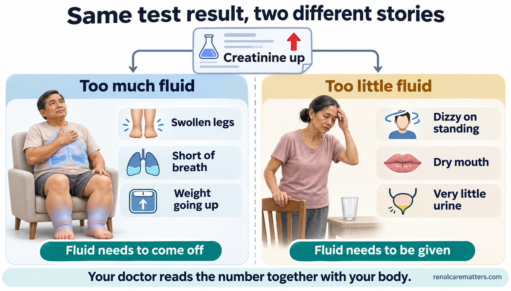
The same rising creatinine can mean too much fluid or too little. The treatment is opposite, so your doctor examines you as well as the number.Ang parehong tumataas na creatinine ay puwedeng mangahulugan ng sobrang tubig o kulang na tubig. Magkasalungat ang gamutan, kaya sinusuri ka ng doktor at hindi lang ang numero.Ang parehas nga nagsaka nga creatinine mahimong magpasabot og sobrang tubig o kulang nga tubig. Sukwahi ang pagtambal, mao nga susihon ka sa doktor ug dili lang ang numero.Ing pareung tataas a creatinine malyari neng buri sabyan sobrang danum o kulang a danum. Misalungat ing pamanulu, anya susurian na ka ning doktor at e mu ing numeru.
Chronic kidney disease develops over months to years. The body adapts, but the adaptations have a cost: higher blood pressure, anemia, changes in bone and minerals, and a higher chance of heart disease. Most of these are found by blood and urine tests long before you feel them.Ang chronic kidney disease ay nabubuo sa loob ng mga buwan hanggang taon. Umaangkop ang katawan, pero may kapalit ang pag-angkop: mas mataas na presyon, anemia, pagbabago sa buto at mineral, at mas mataas na tsansa ng sakit sa puso. Karamihan nito ay nakikita sa test ng dugo at ihi bago mo pa maramdaman.Ang chronic kidney disease motubo sulod sa mga bulan hangtod tuig. Mo-adjust ang lawas, apan adunay bayad ang pag-adjust: mas taas nga presyon, anemia, kausaban sa bukog ug mineral, ug mas taas nga tsansa sa sakit sa kasingkasing. Kadaghanan niini makita sa test sa dugo ug ihi sa wala pa nimo mabati.Ing chronic kidney disease mabubuu ya king lub da ring bulan angga king banwa. Mag-adjust ya ing katawan, pero atin yang kapalit ing pamag-adjust: mas matas a presyon, anemia, pamagbayu king butul at mineral, at mas matas a tsansa ning sakit king pusu. Keraklan kareti akakit la king test ning daya at imi bayu mu pa aramdaman.
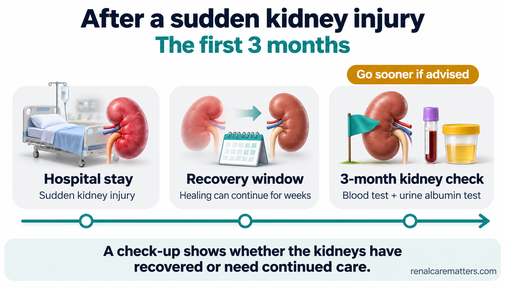
After a sudden kidney injury, the first 3 months are a recovery window. A blood test and a urine albumin test at or before the 3-month mark show whether the kidneys have recovered or need continued care.Pagkatapos ng biglaang pinsala sa bato, ang unang 3 buwan ay panahon ng paggaling. Ipinapakita ng test sa dugo at test ng albumin sa ihi sa o bago ang ika-3 buwan kung gumaling na ang bato o kailangan pa ng tuloy-tuloy na pangangalaga.Human sa kalit nga kadaot sa kidney, ang unang 3 ka bulan mao ang panahon sa pagkaayo. Ang test sa dugo ug test sa albumin sa ihi sa o sa dili pa ang ika-3 nga bulan magpakita kung naayo na ang kidney o nagkinahanglan pa og padayong pag-atiman.Kaybat ning biglang pinsala king batu, ing mumunang 3 bulan panaun yang pamagkaulu. Ing test ning daya at test ning albumin king imi king o bayu ing ka-3 bulan papakit na nung mekaulu ne ing batu o kailangan na pa ing tuluy-tuluy a pamag-alaga.
- AKI
- Acute kidney injury
- CKD
- Chronic kidney disease
- uACR
- Urine albumin-to-creatinine ratio
After a hospital stay with AKIPagkatapos ma-ospital dahil sa AKIHuman ma-ospital tungod sa AKIKaybat mi-ospital uli ning AKI
A kidney that was injured needs a follow-up check even if you feel well. Ask for a kidney check that includes a urine albumin test within 3 months of the injury, and sooner if you went home on dialysis, have heart failure, or your doctor advised it. People who had AKI are more likely to develop CKD and heart problems later, and a follow-up visit is how these are caught early.Ang batong napinsala ay kailangang balikan kahit mabuti ang pakiramdam mo. Humingi ng check-up sa bato na may test ng albumin sa ihi sa loob ng 3 buwan mula sa pinsala, at mas maaga kung umuwi kang naka-dialysis, may heart failure, o ipinayo ng doktor. Ang mga nagka-AKI ay mas malamang magkaroon ng CKD at problema sa puso sa hinaharap, at sa follow-up nahuhuli nang maaga ang mga ito.Ang kidney nga nadaot kinahanglang balikan bisan maayo ang imong gibati. Pangayo og check-up sa kidney nga adunay test sa albumin sa ihi sulod sa 3 ka bulan gikan sa kadaot, ug mas sayo kung mipauli ka nga naka-dialysis, adunay heart failure, o gitambagan sa doktor. Ang mga naka-AKI mas lagmit nga makabaton og CKD ug problema sa kasingkasing sa umaabot, ug pinaagi sa follow-up kini madakpan og sayo.Ing batung mepinsala kailangan neng balikan agyang mayap ing panamdam mu. Mangayu kang check-up king batu a atin test ning albumin king imi king lub ning 3 bulan manibat king pinsala, at mas maranun nung minuli kang naka-dialysis, atin kang heart failure, o inatul ning doktor. Deng mika-AKI mas malyari lang mika-CKD at problema king pusu king daratang a panaun, at king follow-up la mararakap maranun deti.
Tests that show how your organs are getting alongMga test na nagpapakita kung paano nagkakasundo ang mga organ moMga test nga magpakita kung giunsa pagkasinabot sa imong mga organDeng test a magpakit nung makananu lang mikakasundu deng organ mu
No single test shows the whole picture. Read together, these tests show how the organs are getting along.Walang iisang test na nagpapakita ng buong larawan. Kapag binasa nang sabay-sabay, ipinapakita ng mga test na ito kung paano nagkakasundo ang mga organ.Walay usa ka test nga magpakita sa tibuok hulagway. Kung basahon nga mag-uban, kini nga mga test magpakita kung giunsa pagkasinabot sa mga organ.Alang metung a test a magpakit king mabilug a larawan. Nung basan lang misasabe, deting test papakit da nung makananu lang mikakasundu deng organ.
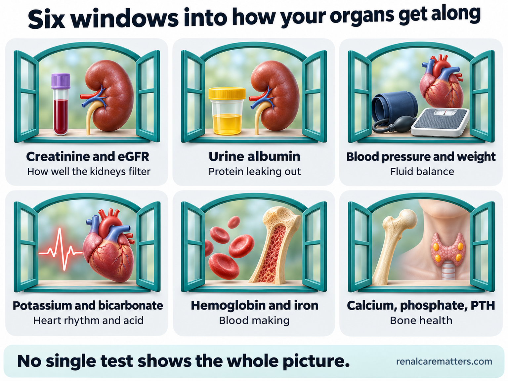
Each test looks at one partnership. Read together, they show how the organs are getting along.Bawat test ay tumitingin sa isang ugnayan. Kapag binasa nang sabay-sabay, ipinapakita nila kung paano nagkakasundo ang mga organ.Ang matag test motan-aw sa usa ka kalambigitan. Kung basahon nga mag-uban, magpakita sila kung giunsa pagkasinabot sa mga organ.Ing balang test lalawen ne ing metung a ugnayan. Nung basan lang misasabe, papakit da nung makananu lang mikakasundu deng organ.
- eGFR
- Estimated glomerular filtration rate
- PTH
- Parathyroid hormone
- Creatinine and estimated glomerular filtration rate (eGFR): how well the kidneys filter. One result is a snapshot; the trend over time tells the story.Creatinine at estimated glomerular filtration rate (eGFR): kung gaano kahusay magsala ang bato. Ang isang resulta ay parang litrato lang; ang takbo sa paglipas ng panahon ang nagkukuwento.Creatinine ug estimated glomerular filtration rate (eGFR): kung unsa ka maayo mosala ang kidney. Ang usa ka resulta sama ra sa litrato; ang dagan sa paglabay sa panahon ang nagsaysay.Creatinine at estimated glomerular filtration rate (eGFR): nung makananu kayap magsala ing batu. Ing metung a resulta antimo yang litratu mu; ing takbu king panaun ing magkuwentu.
- Urine albumin-to-creatinine ratio (uACR): protein leaking into the urine, an early sign of strain on the kidneys and blood vessels.Urine albumin-to-creatinine ratio (uACR): protinang tumatagas sa ihi, maagang senyales ng hirap ng bato at mga ugat.Urine albumin-to-creatinine ratio (uACR): protina nga motulo ngadto sa ihi, sayo nga timaan sa kalisod sa kidney ug mga ugat.Urine albumin-to-creatinine ratio (uACR): protinang tutulu king imi, maranun a tanda ning kasakitan ning batu at deng uyat.
- Blood pressure and body weight: the daily signal of fluid balance between the heart and kidneys.Presyon at timbang: ang pang-araw-araw na senyales ng balanse ng tubig sa pagitan ng puso at bato.Presyon ug timbang: ang inadlaw nga senyales sa balanse sa tubig tali sa kasingkasing ug kidney.Presyon at timbang: ing aldo-aldong senyales ning balanse ning danum king pilatan ning pusu at batu.
- Potassium and bicarbonate: a salt and an acid buffer the kidneys normally balance. They affect heart rhythm and breathing.Potassium at bicarbonate: isang asin at panlaban sa asido na karaniwang binabalanse ng bato. Nakaaapekto ang mga ito sa ritmo ng puso at paghinga.Potassium ug bicarbonate: usa ka asin ug panagang sa asido nga kasagarang gibalanse sa kidney. Makaapekto kini sa ritmo sa kasingkasing ug pagginhawa.Potassium at bicarbonate: metung a asin at panlaban king asidu a karaniwan nang babalansian ning batu. Makaapektu la king ritmu ning pusu at pangisnawa.
- Hemoglobin, ferritin and transferrin saturation (TSAT): the link between the kidneys and the bone marrow.Hemoglobin, ferritin at transferrin saturation (TSAT): ang ugnayan ng bato at bone marrow.Hemoglobin, ferritin ug transferrin saturation (TSAT): ang sumpay sa kidney ug bone marrow.Hemoglobin, ferritin at transferrin saturation (TSAT): ing ugnayan ning batu at bone marrow.
- Calcium, phosphate and PTH: the link between the kidneys and the bones.Calcium, phosphate at PTH: ang ugnayan ng bato at buto.Calcium, phosphate ug PTH: ang sumpay sa kidney ug bukog.Calcium, phosphate at PTH: ing ugnayan ning batu at butul.
What protects several organs at onceAno ang sabay na nagpoprotekta sa ilang organUnsay dungan nga nanalipod sa pipila ka organNanu ing sabe-sabeng mamrotekta kareng pilan a organ
Because the organs are linked, caring for one often helps the others. Controlling blood pressure and blood sugar, eating less salt, staying active, not smoking and keeping your vaccines up to date protect the kidneys, heart and brain together.Dahil magkakaugnay ang mga organ, ang pag-aalaga sa isa ay kadalasang nakatutulong sa iba. Ang pagkontrol sa presyon at asukal sa dugo, pagbawas ng asin, pagiging aktibo, hindi paninigarilyo at kumpletong bakuna ay sabay na nagpoprotekta sa bato, puso at utak.Tungod kay magkadugtong ang mga organ, ang pag-atiman sa usa kasagarang makatabang sa uban. Ang pagkontrol sa presyon ug asukal sa dugo, pagkunhod sa asin, pagpabiling aktibo, dili pagpanigarilyo ug kompletong bakuna dungan nga nanalipod sa kidney, kasingkasing ug utok.Uling mikakawing la ring organ, ing pamag-alaga king metung kalambang makasaup ya kareng aliwa. Ing pamagkontrol king presyon at asukal king daya, pamagbawas asin, pamanatiling aktibu, e pamanigarilyu at kumpletung bakuna sabe-sabe dang poprotektan ing batu, pusu at utak.
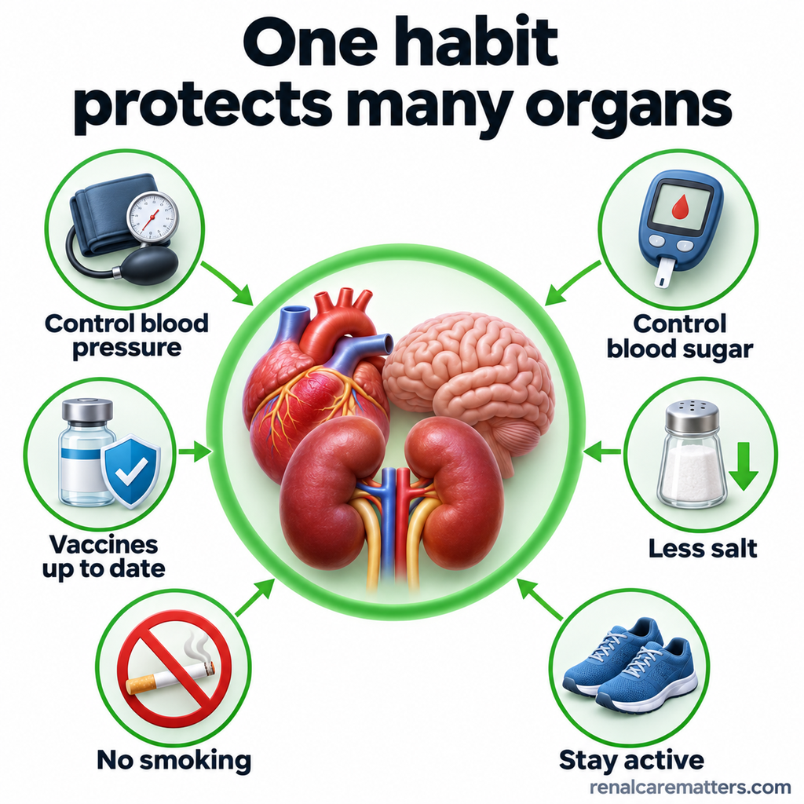
Blood pressure, blood sugar, salt, activity, not smoking and vaccines protect several organs at once.Ang presyon, asukal sa dugo, asin, pagiging aktibo, hindi paninigarilyo at bakuna ay sabay na nagpoprotekta sa ilang organ.Ang presyon, asukal sa dugo, asin, pagka-aktibo, dili pagpanigarilyo ug bakuna dungan nga nanalipod sa pipila ka organ.Ing presyon, asukal king daya, asin, pangaaktibu, e pamanigarilyu at bakuna sabe-sabe dang poprotektan deng pilan a organ.
Some medicines were shown in large studies to protect the kidneys and the heart at the same time in people with CKD. These include medicines called SGLT2 inhibitors (such as empagliflozin or dapagliflozin) and, for people with type 2 diabetes, finerenone and semaglutide. They are among the best-proven treatments in kidney care, but they are not right for everyone. Ask your doctor whether one fits you.May mga gamot na napatunayan sa malalaking pag-aaral na sabay na nagpoprotekta sa bato at puso ng mga may CKD. Kabilang dito ang mga gamot na tinatawag na SGLT2 inhibitor (tulad ng empagliflozin o dapagliflozin) at, para sa may type 2 diabetes, ang finerenone at semaglutide. Kabilang ang mga ito sa pinakamahusay na napatunayang gamutan sa bato, pero hindi angkop sa lahat. Itanong sa doktor kung may bagay sa iyo.Adunay mga tambal nga napamatud-an sa dagkong mga pagtuon nga dungan nga nanalipod sa kidney ug kasingkasing sa mga adunay CKD. Lakip niini ang mga tambal nga gitawag og SGLT2 inhibitor (sama sa empagliflozin o dapagliflozin) ug, para sa adunay type 2 diabetes, ang finerenone ug semaglutide. Lakip kini sa labing napamatud-ang pagtambal sa kidney, apan dili angay sa tanan. Pangutan-a ang doktor kung aduna bay angay kanimo.Atin gamut a apatunayan kareng maragul a pag-aral a sabe dang poprotektan ing batu at pusu da reng atin CKD. Kayabe la keti deng gamut a awsan dang SGLT2 inhibitor (antimo ing empagliflozin o dapagliflozin) at, para kareng atin type 2 diabetes, ing finerenone at semaglutide. Kayabe la kareng pekamayap a apatunayan a pamanulu king batu, pero e la bage kareng ngan. Kutnan me ing doktor nung atin bage keka.
Do thisGawin itoBuhata kiniGawan me ini
Bring every medicine and supplement to each visit. Ask before taking pain relievers such as ibuprofen, naproxen or mefenamic acid, which can reduce blood flow to the kidneys. If you are vomiting, have diarrhea or cannot drink, call your clinic and ask which medicines to pause until you recover.Dalhin ang lahat ng gamot at supplement sa bawat check-up. Magtanong muna bago uminom ng pain reliever tulad ng ibuprofen, naproxen o mefenamic acid, na puwedeng magpababa ng daloy ng dugo sa bato. Kung nagsusuka ka, nagtatae o hindi makainom, tumawag sa klinika at itanong kung aling gamot ang ihihinto muna hanggang gumaling ka.Dad-a ang tanang tambal ug supplement sa matag check-up. Pangutana una sa dili pa moinom og pain reliever sama sa ibuprofen, naproxen o mefenamic acid, nga makapaubos sa dagan sa dugo ngadto sa kidney. Kung nagsuka ka, nagkalibang o dili makainom, tawag sa klinika ug pangutana kung unsang tambal ang ihunong una hangtod maayo ka.Dalan mu ngan ing gamut at supplement king balang check-up. Mangutang ka pamu bayu ka minum pain reliever antimo ing ibuprofen, naproxen o mefenamic acid, a malyaring magpababa king agus ning daya king batu. Nung mumulua ka, magtaki o e ka makainum, maus ka king klinika at kutnan mu nung nanung gamut ing tuknangan pamu anggang mekaulu ka.
Bring every medicine and supplement to each visit, and ask before taking a pain reliever.Dalhin ang lahat ng gamot at supplement sa bawat check-up, at magtanong muna bago uminom ng pain reliever.Dad-a ang tanang tambal ug supplement sa matag check-up, ug pangutana una sa dili pa moinom og pain reliever.Dalan mu ngan ing gamut at supplement king balang check-up, at mangutang ka pamu bayu ka minum pain reliever.
Honesty about gut "detox" productsKatapatan tungkol sa mga "detox" na produkto para sa bitukaKamatuoran bahin sa mga "detox" nga produkto para sa tinaiKatutuan tungkul kareng "detox" a produktu para king bituka
Probiotics, "kidney cleanse" teas and charcoal products are sold to remove kidney toxins through the gut. In studies so far they changed some blood test numbers but have not been shown to slow kidney disease or help people live longer. Eating enough fiber from vegetables, fruits and whole grains, planned with your doctor or dietitian so your potassium stays safe, is a better place to start.Ang probiotics, "kidney cleanse" na tsaa at charcoal na produkto ay ibinebenta para alisin daw ang lason ng bato sa pamamagitan ng bituka. Sa mga pag-aaral sa ngayon, binago nila ang ilang numero sa dugo pero hindi pa napatunayang nagpapabagal ng sakit sa bato o nagpapahaba ng buhay. Mas mabuting magsimula sa sapat na fiber mula sa gulay, prutas at whole grains, na plinano kasama ang doktor o dietitian para ligtas ang potassium mo.Ang probiotics, "kidney cleanse" nga tsa ug charcoal nga produkto gibaligya aron kuno tangtangon ang hilo sa kidney pinaagi sa tinai. Sa mga pagtuon hangtod karon, giusab nila ang pipila ka numero sa dugo apan wala pa mapamatud-i nga makapahinay sa sakit sa kidney o makapataas sa kinabuhi. Mas maayong magsugod sa igong fiber gikan sa utanon, prutas ug whole grains, nga giplano uban sa doktor o dietitian aron luwas ang imong potassium.Ing probiotics, "kidney cleanse" a tsa at charcoal a produktu pisasali la ban kanu lakwan ing lasun ning batu kapamilatan ning bituka. Kareng pag-aral angga ngeni, binayu da ing pilan a numeru king daya pero e pa apatunayan a papabagalan de ing sakit king batu o papakaban de ing bie. Mas mayap magumpisa king sapat a fiber manibat king gule, prutas at whole grains, a plinanu kayabe ing doktor o dietitian ban ligtas ing potassium mu.
Questions to bring to your next visitMga tanong na dadalhin sa susunod mong check-upMga pangutana nga dad-on sa imong sunod nga check-upDeng kutang a dalan mu king tutuking check-up mu
Write your questions down before the visit. These are a good start.Isulat ang mga tanong mo bago ang check-up. Magandang panimula ang mga ito.Isulat ang imong mga pangutana sa dili pa ang check-up. Maayo kining sugdanan.Isulat mu la ring kutang mu bayu ing check-up. Mayap lang panumpisan deti.
- Which of my organs are affected by my kidney disease right now?Alin sa mga organ ko ang apektado ng sakit ko sa bato ngayon?Asa sa akong mga organ ang naapektohan sa akong sakit sa kidney karon?Nanu kareng organ ku ing apektadu ning sakit ku king batu ngeni?
- What are my eGFR and uACR, and how have they changed?Ano ang eGFR at uACR ko, at paano nagbago ang mga ito?Unsa ang akong eGFR ug uACR, ug giunsa kini pagkausab?Nanu ing eGFR at uACR ku, at makananu lang mibayu?
- Do I have anemia, and were my iron levels checked?May anemia ba ako, at nasuri ba ang iron ko?Aduna ba koy anemia, ug nasusi ba ang akong iron?Atin ku wari anemia, at asuri ne ing iron ku?
- Should my calcium, phosphate and PTH be checked?Dapat bang suriin ang calcium, phosphate at PTH ko?Kinahanglan bang susihon ang akong calcium, phosphate ug PTH?Dapat lang suriin ing calcium, phosphate at PTH ku?
- Is a medicine that protects both the kidneys and the heart right for me?Bagay ba sa akin ang gamot na nagpoprotekta sa bato at puso?Angay ba kanako ang tambal nga nanalipod sa kidney ug kasingkasing?Bage ya kanaku ing gamut a mamrotekta king batu at pusu?
- I was in hospital with AKI. When is my 3-month kidney check?Na-ospital ako dahil sa AKI. Kailan ang check-up ko sa bato sa ika-3 buwan?Na-ospital ko tungod sa AKI. Kanus-a ang akong check-up sa kidney sa ika-3 nga bulan?Mi-ospital ku uli ning AKI. Kapilan ing check-up ku king batu king ka-3 bulan?
Write your questions down and bring someone with you. A good visit is a conversation.Isulat ang mga tanong mo at magsama ng kasama. Ang mabuting check-up ay isang usapan.Isulat ang imong mga pangutana ug pagdala og kauban. Ang maayong check-up usa ka panag-istoryahanay.Isulat mu la ring kutang mu at magdala kang kayabe. Ing mayap a check-up metung yang pamisabi-sabi.
Common questionsMga karaniwang tanongKasagarang mga pangutanaDeng karaniwang kutang
The same creatinine can mean different things: find the active pathway
Interorgan crosstalk is the two-way exchange of signals between the kidney and distant organs. It travels through five channels: pressure and flow, hormones, nerves, handling of metabolites, and immune signals.4, 38 In health these loops are homeostasis. In acute kidney injury (AKI) and chronic kidney disease (CKD) the same loops amplify illness: a failing heart congests the kidney, and a failing kidney retains the volume, potassium and acid that strain the heart.
The clinical use of the concept is narrow and practical. Before acting on a creatinine, a hemoglobin or a phosphate, identify which organ pair is driving the abnormality, in which direction, and on what quality of evidence. The same creatinine rise calls for diuretics in one patient and for volume in another.
Name the pathway and its direction
Is the kidney the sender or the receiver? Congestion, low forward flow, a hormone loop, a retained solute, or a shared insult such as sepsis each point to a different next step.
Grade the evidence before acting
Many crosstalk mechanisms are proven only in animals. Act on guideline-backed and trial-backed steps; treat mechanism-only targets as research.
Prefer therapy that protects more than one organ
Sodium-glucose cotransporter 2 (SGLT2) inhibitors reduce kidney disease progression, AKI and heart failure events in randomized trials.
Evidence labels used on this page. Each claim carries the design behind it, from guideline statements and randomized controlled trials (RCTs) down to laboratory work. Guideline a published recommendation or practice point, cited with its own grading; Human RCT a randomized trial in people; Human observational a cohort or registry, which shows association; Experimental cell or animal work; Narrative synthesis expert review; Established physiology accepted normal function.
Three kinds of evidence answer three different causal questions. Temporal sequence shows what came first. Experimental perturbation shows whether blocking a signal changes the outcome in a model. Human validation shows whether the signal operates in patients and whether acting on it helps them. Detecting a molecule in blood, or finding a spatial or transcriptional signature in tissue, does not establish its source, its engagement of the target, or benefit from treatment.4, 49
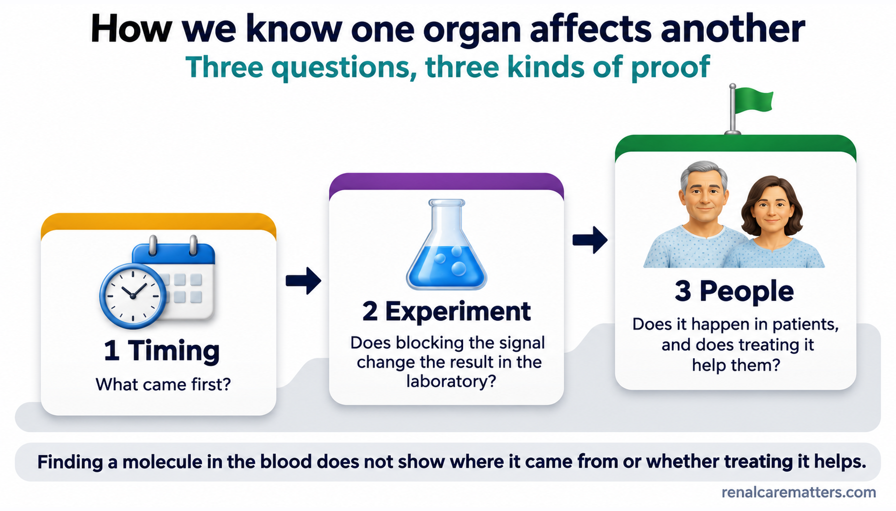
Timing, experiment and human studies answer different questions. A link between organs is proven only when it passes all three.
Five channels, one template
Every pathway on this page can be written in one template: source tissue → route or mediator → target → response → feedback. Writing it out exposes the weak link. Most disputed pathways have a well-defined mediator and target in animals but no proof in people that the mediator comes from the proposed source, or that removing it changes outcomes.
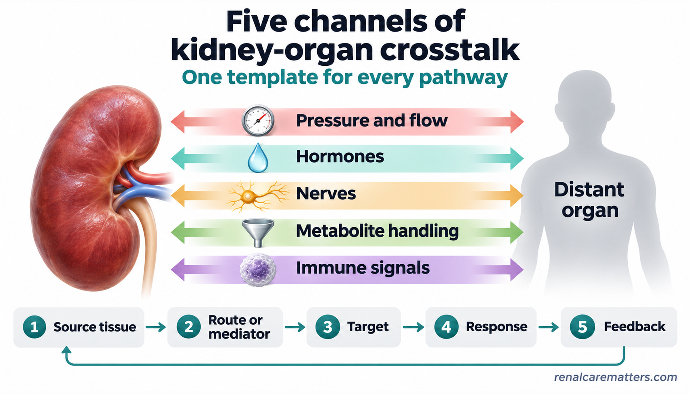
The five channels of kidney-organ communication, and the five-step template used to describe each pathway: source tissue, route or mediator, target, response, and feedback.
- RAAS
- Renin-angiotensin-aldosterone system
- EPO
- Erythropoietin
- FGF23
- Fibroblast growth factor 23
- PTH
- Parathyroid hormone
| Channel | Healthy exchange | How disease turns it into an amplifier | Certainty |
|---|---|---|---|
| Pressure and flow | Cardiac output and arterial pressure perfuse the kidney; venous pressure is its outflow pressure; the kidney sets extracellular volume. | Raised venous pressure lowers the gradient across the kidney; low forward flow lowers filtration; retained sodium raises venous pressure further. | Established physiology Human observational |
| Hormones | The kidney releases renin, erythropoietin and calcitriol, and responds to natriuretic peptides, aldosterone, parathyroid hormone (PTH) and fibroblast growth factor 23 (FGF23). | Renin-angiotensin-aldosterone system (RAAS) activation, falling erythropoietin and calcitriol, rising FGF23 and PTH. | Established physiology Human observational |
| Nerves | Renal sympathetic efferents set vascular tone, renin release and sodium reabsorption; renal afferents feed back to central sympathetic outflow. | Sustained sympathetic activation in heart failure and CKD. | Established physiology |
| Metabolite handling | Filtration and tubular secretion set the body's exposure to solutes, acids and drugs made or absorbed elsewhere. | Retention of gut-derived protein-bound solutes, acid and renally cleared drugs. | Established physiology Human observational |
| Immune signals | Cytokines, damage signals and immune cells move between organs. | After AKI in animals, cytokine-dependent injury appears in lung, heart and brain; in sepsis the insult reaches several organs at once. | Experimental |
The kidney also modifies its own messages. Because many mediators are cleared by filtration or tubular secretion, a fall in glomerular filtration rate (GFR) raises their concentration even when production is unchanged. A high blood level in CKD therefore says little about where the molecule came from.4
What changes over hours, weeks and years
Time separates three states. AKI is an abrupt fall in kidney function within 7 days. Acute kidney disease (AKD) covers ongoing injury or incomplete recovery up to 90 days. Disease that persists beyond 90 days meets the time criterion for CKD.11 The acute course runs from insult to injury, then to recovery or persistent dysfunction; CKD adds slower adaptations in blood pressure, mineral metabolism, erythropoiesis and muscle.
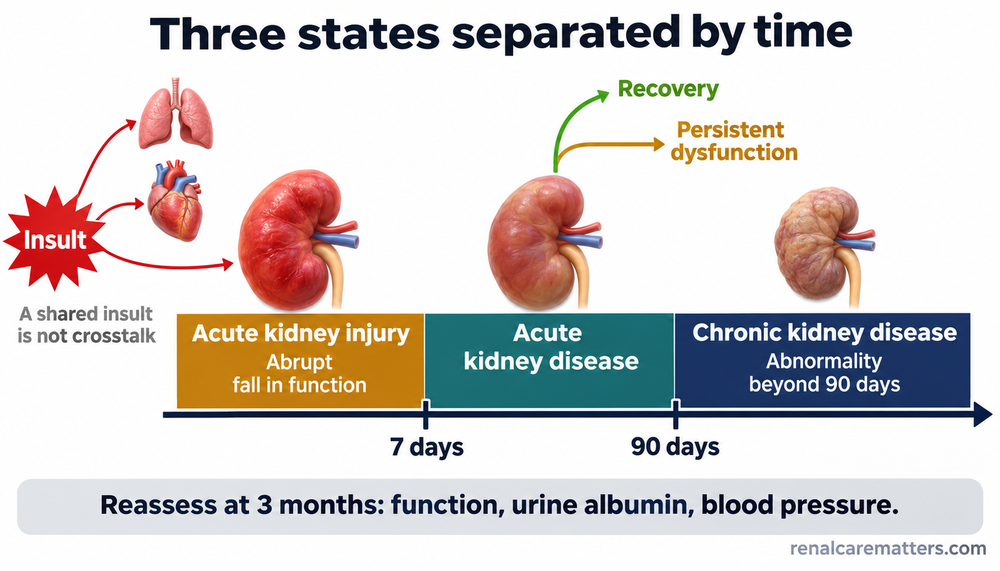
Acute kidney injury, acute kidney disease and chronic kidney disease are separated by time. An insult that injures several organs at once is not evidence that one organ injured another.
A shared insult is not crosstalk
Sepsis, shock and major surgery injure several organs simultaneously. When lung and kidney fail together, co-occurrence does not show that one caused the other. Sepsis-associated AKI is defined by timing (AKI within 7 days of sepsis onset), not by a proven kidney-specific mechanism.37, 63
What follows AKI. In a meta-analysis of 82 cohort studies (2,017,437 participants), AKI was associated with new or progressive CKD (hazard ratio [HR] 2.67, 95% confidence interval [CI] 1.99 to 3.58; 17.76 versus 7.59 cases per 100 person-years), end-stage kidney disease (ESKD) (HR 4.81, 95% CI 3.04 to 7.62; 0.47 versus 0.08 per 100 person-years) and death (HR 1.80, 95% CI 1.61 to 2.02), with a gradient across AKI stages.51 In 25 cohort studies (254,408 adults), AKI was associated with cardiovascular mortality (relative risk [RR] 1.86, 95% CI 1.72 to 2.01), heart failure (RR 1.58, 95% CI 1.46 to 1.72) and myocardial infarction (RR 1.40, 95% CI 1.23 to 1.59).43 Human observational These are associations: sicker patients are more likely both to develop AKI and to die, and adjustment cannot remove that entirely.
What follows CKD. In more than one million adults, the adjusted hazard of death rose as estimated GFR (eGFR) fell: 1.2 at 45 to 59, 1.8 at 30 to 44, 3.2 at 15 to 29 and 5.9 below 15 mL/min/1.73 m², with a parallel rise in cardiovascular events.18 Human observational
Follow-up after AKI
The Kidney Disease: Improving Global Outcomes (KDIGO) 2012 AKI guideline advises evaluating patients 3 months after AKI for resolution, new onset, or worsening of pre-existing CKD (recommendation 2.3.4, Not Graded).28 Guideline A KDIGO 2026 guideline on AKI and AKD, with new recommendations on follow-up, was released as a public-review draft in 2026 and had not been published in final form when this page was reviewed; draft statements are not used here.32
What to measure is better supported than who should do the visit. In the ASSESS-AKI cohort (1,538 hospital survivors, 769 with AKI), a higher urine albumin-to-creatinine ratio (uACR) about 3 months after discharge was associated with kidney disease progression (HR 1.53 per doubling, 95% CI 1.45 to 1.62), and uACR discriminated better in those who had AKI (C statistic 0.82) than in those who had not (0.70).22 Human observational A six-variable model (age, sex, baseline creatinine, albuminuria, AKI severity, discharge creatinine) predicted advanced CKD after AKI with a C statistic of 0.81 on external validation.26 Human observational
Models of care are less certain. Early nephrology follow-up after dialysis-requiring AKI was associated with lower mortality in a propensity-matched cohort (HR 0.76, 95% CI 0.62 to 0.93).21 Human observational The randomized FUSION trial could enroll only 71 of 269 eligible patients; major adverse kidney events at 1 year were 44% with nephrologist follow-up and 43% with usual care (RR 1.02, 95% CI 0.60 to 1.73).52 Human RCT In 98 survivors of stage 3 AKI, multidisciplinary care improved blood pressure control (87.9% versus 57.5%) and lowered uACR at 12 months, with no difference in eGFR.55 Human RCT Both trials were small and measured feasibility or surrogate outcomes.
Heart and circulation: congestion, forward flow and how to read a creatinine
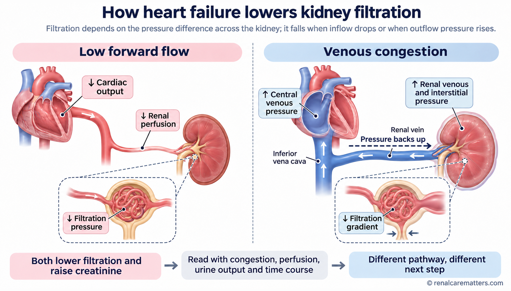
Two routes from a failing heart to a struggling kidney. Low forward flow reduces what arrives; venous congestion raises the pressure the kidney must drain against. Both lower filtration, and they call for different treatment.
- CVP
- Central venous pressure
- GFR
- Glomerular filtration rate
- RAAS
- Renin-angiotensin-aldosterone system
Physiology. Cardiac output and arterial pressure deliver blood to the glomerulus. Natriuretic peptides promote sodium excretion; RAAS and sympathetic nerves defend perfusion by retaining it. Filtration depends on the pressure difference across the kidney, so its outflow pressure matters as much as its inflow. Established physiology
Congestion and forward flow. In 145 patients with advanced decompensated heart failure managed with a pulmonary artery catheter, 40% developed worsening renal function. Those patients had higher central venous pressure (CVP) on admission (18 ± 7 versus 12 ± 6 mm Hg), and worsening was less frequent when CVP fell below 8 mm Hg; the relationship held across the range of cardiac index.39 Human observational In 137 patients with sepsis, higher CVP was associated with new or persistent AKI after adjustment for fluid balance (odds ratio [OR] 1.22, 95% CI 1.08 to 1.39), while mean arterial pressure and cardiac output did not differ.35 Human observational These single-center studies support congestion as a major driver; they do not exclude low forward flow in an individual patient.
A creatinine rise during decongestion is not automatically injury. In the ROSE-AHF trial population, treated with high-dose loop diuretics, worsening renal function occurred in 21.2% and was not associated with a rise in the tubular injury markers neutrophil gelatinase-associated lipocalin (NGAL), N-acetyl-β-D-glucosaminidase (NAG) or kidney injury molecule 1 (KIM-1).3 Human observational In DOSE, bolus and continuous furosemide produced similar creatinine changes (0.05 versus 0.07 mg/dL, P = 0.45).17 Human RCT Read the creatinine with the interval over which it rose, blood pressure, perfusion, urine output and the trajectory of congestion.
Taxonomy. Cardiorenal syndrome is classified into five types: acute cardiorenal (1), chronic cardiorenal (2), acute renocardiac (3), chronic renocardiac (4) and secondary to a systemic condition (5).45, 47 Teach it as a vocabulary with overlap. Most patients move between types, and the label does not select a treatment.
Venous Excess Ultrasound (VExUS): a phenotype with conditional portability
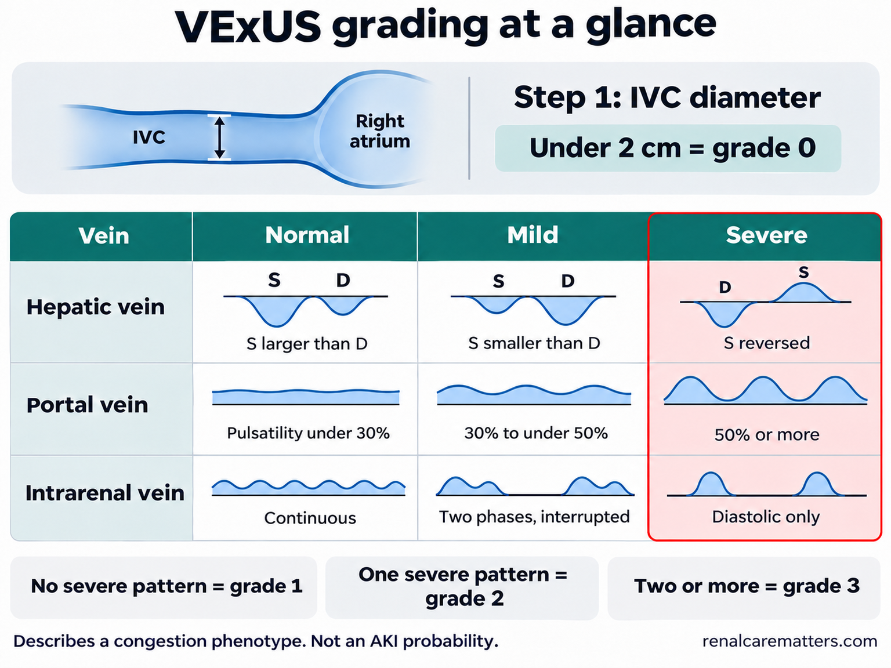
The grade combines vena cava diameter with three venous Doppler patterns. It describes congestion; it is not a probability of kidney injury.
- VExUS
- Venous Excess Ultrasound
- IVC
- Inferior vena cava
- AKI
- Acute kidney injury
VExUS combines inferior vena cava (IVC) diameter with hepatic, portal and intrarenal venous Doppler patterns. In the cardiac surgery derivation cohort (145 patients, 706 scans), the severe grade was associated with later AKI (HR 3.69, 95% CI 1.65 to 8.24; adjusted HR 2.82, 95% CI 1.21 to 6.55).7 Human observational In a general intensive care unit (ICU) cohort of 145 patients, admission VExUS was not associated with AKI (P = 0.136; grade 2 or higher, OR 0.50, 95% CI 0.21 to 1.17) or 28-day mortality.5 Human observational A 2026 meta-analysis of 32 studies (3,142 patients) found the same split: VExUS grade 2 or higher was associated with AKI in cardiac patients (OR 4.44, 95% CI 2.34 to 8.43; moderate certainty) and not in the critically ill (OR 1.45, 95% CI 0.70 to 2.99; very low certainty).33
Acting on the grade has not yet been shown to improve outcomes. In 140 patients with cardiorenal syndrome type 1, VExUS-guided decongestion did not improve kidney function recovery, although decongestion was achieved more often (OR 2.6).25 Human RCT An 80-patient pilot trial of ultrasound-assessed fluid tolerance in AKI showed feasibility and more early diuretic use, with no difference in AKI progression.19 Human RCT Use VExUS where pretest probability of congestion is meaningful, and read it with the bedside picture. A VExUS grading worksheet documents the grade and its limits.
Kidney to heart. AKI affects the heart through volume overload, hyperkalemia and acidemia. CKD adds hypertension, anemia, mineral and endocrine changes and vascular calcification. Established physiology
Interpreting the case
The later echocardiogram showed preserved left ventricular ejection fraction with impaired relaxation and findings consistent with elevated left-sided filling pressure. That distinction matters because ejection fraction describes how much blood the ventricle ejects, while filling pressure helps explain a different part of the hemodynamic picture. Renal venous congestion and the mechanism of the earlier intensive-care episode remain unconfirmed. Long-standing hypertension and diabetes provide shared pathways for cardiac and kidney injury. Changes in perfusion and volume are plausible additional contributors.13, 34
Teaching question. If breathlessness recurs, which findings would help you distinguish elevated filling pressure, systemic venous congestion, and poor perfusion? Compare the weight and symptom trends, jugular venous pressure, lung findings, blood pressure, and urine output with the kidney function trend.
The case itself is told in the Patients & Families tab, under “Why did my kidneys get worse when my heart was sick?”
Guidelines. The 2026 European Society of Cardiology (ESC) guideline on cardiovascular disease and CKD, written with the European Renal Association (ERA), is the first ESC guideline dedicated to this overlap and emphasizes earlier recognition of CKD through wider kidney function and urine albumin testing in people with cardiovascular disease.13 Guideline The 2026 American Heart Association (AHA), American College of Cardiology (ACC), American Diabetes Association (ADA) and American Society of Nephrology (ASN) guideline is the first U.S. guideline on cardiovascular-kidney-metabolic (CKM) syndrome.41 Guideline KDIGO 2024 remains the reference for staging CKD by cause, GFR category and albuminuria category.30 Guideline Consult each document for its own recommendation classes; grading systems are not interchangeable.
Lung: fluid, pressure and inflammation
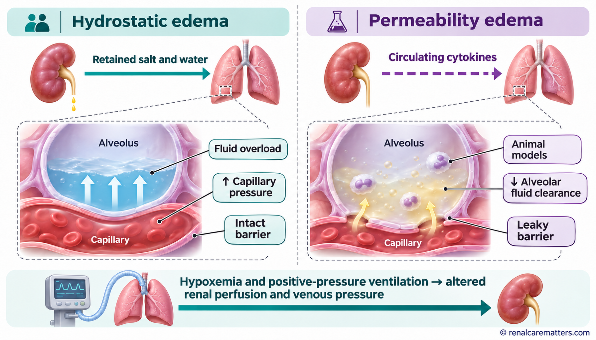
Fluid overload is the established route from kidney to lung. Cytokine-driven permeability is shown in animal models and is not yet demonstrated in patients.
Physiology. The lungs remove carbon dioxide within minutes; the kidneys adjust bicarbonate reabsorption and net acid excretion over hours to days. Each compensates for a primary disturbance in the other. Established physiology
Kidney to lung. The best-established route is fluid. In 618 critically ill patients with AKI, fluid overload at dialysis initiation was associated with death (adjusted OR 2.07), and patients who were fluid overloaded when creatinine peaked were less likely to recover kidney function.10 Human observational Animal models add a second route: after experimental AKI, cytokine-dependent increases in pulmonary vascular permeability and reduced alveolar fluid transport appear without volume overload.15, 53 Experimental Direct cytokine transfer from kidney to lung has not been demonstrated in patients.
Lung to kidney. In 8,029 ICU patients, AKI occurred in 44.3% of those with acute respiratory distress syndrome (ARDS) and 27.4% of those without; after adjustment, ARDS (OR 11.01, 95% CI 6.83 to 17.73) and mechanical ventilation without ARDS (OR 4.34, 95% CI 3.71 to 5.10) were each associated with AKI.14 Human observational A meta-analysis of 31 studies found invasive ventilation associated with a threefold increase in the odds of AKI (OR 3.16, 95% CI 2.32 to 4.28); tidal volume and positive end-expiratory pressure settings did not modify the risk, which the authors read as favoring a hemodynamic mechanism.59 Human observational
Practice. Separate hydrostatic edema, permeability edema and mixed pictures, and integrate respiratory status, fluid trajectory, hemodynamics and urine output. The Acute Disease Quality Initiative (ADQI) lung-kidney consensus found that lung-protective ventilation, conservative fluid management and early recognition and treatment of pulmonary infection were the only clinical recommendations supported by higher-quality evidence.27 Guideline
Liver: hepatorenal syndrome and the creatinine trap
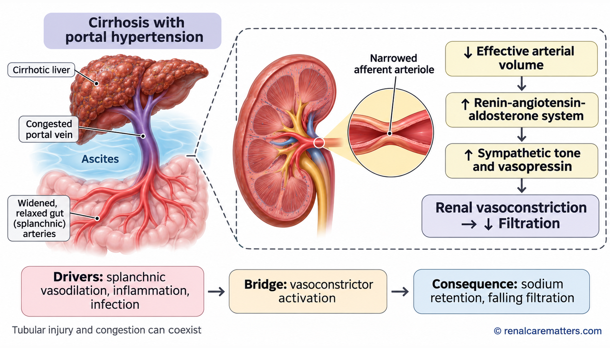
In advanced cirrhosis the gut circulation dilates and the body reads this as underfilling. The vasoconstrictor systems that respond also narrow the kidney arterioles, and filtration falls.
- HRS-AKI
- Hepatorenal syndrome-acute kidney injury
- RAAS
- Renin-angiotensin-aldosterone system
- GFR
- Glomerular filtration rate
Physiology. Hepatic metabolism and renal excretion jointly clear circulating solutes. In advanced cirrhosis, splanchnic vasodilation lowers effective arterial filling and triggers vasoconstrictor systems that reduce renal perfusion. Inflammation, tubular injury and congestive physiology often coexist, so hepatorenal syndrome is one phenotype among several causes of AKI in cirrhosis.40
The creatinine trap. Sarcopenia lowers creatinine production, and creatinine therefore overestimates kidney function in advanced liver disease. A value that looks near normal can hide a large fall in GFR.
Diagnosis. The 2024 joint consensus of ADQI and the International Club of Ascites (ICA) defines hepatorenal syndrome-AKI (HRS-AKI) by four elements: cirrhosis with ascites; AKI that meets the consensus criteria; no improvement within 24 hours of adequate volume resuscitation when resuscitation is clinically indicated; and no strong evidence of an alternative primary cause. A routine 48-hour albumin challenge is no longer required.40 Guideline Look for infection, shock, obstruction, nephrotoxin exposure and tubular injury before and during treatment.
Treatment: benefit and harm are separate endpoints. In CONFIRM (300 adults with type 1 hepatorenal syndrome by the trial definition), verified reversal occurred in 63 of 199 (32%) with terlipressin and 17 of 101 (17%) with placebo (P = 0.006), an absolute difference of about 15 per 100 (NNT about 7). By day 90, death had occurred in 51% and 45%, and death from respiratory disorders in 11% and 2%.62 Human RCT The U.S. label reports serious or fatal respiratory failure in 14% of terlipressin-treated patients and 5% on placebo in the safety population, about 9 more per 100 (number needed to harm [NNH] about 11), and directs that oxygen saturation be assessed before treatment and that terlipressin not be started in patients with hypoxia; volume overload and advanced acute-on-chronic liver failure raise the risk.57 Terlipressin improved kidney function without a demonstrated survival benefit in this trial. Trial eligibility used an older definition; do not extend its effect size to every patient who meets the 2024 criteria. The HRS-AKI bedside guide covers dosing and monitoring.
Gut and liver: generation, processing and clearance of solutes
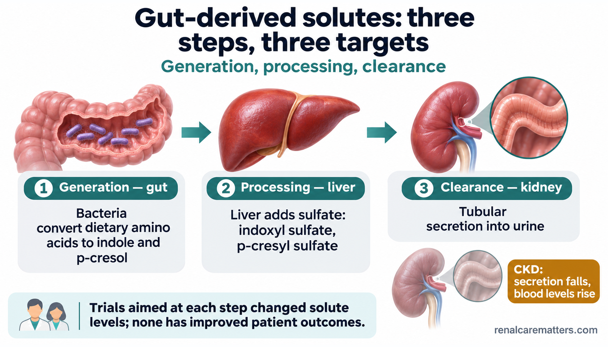
A gut-derived solute is generated by bacteria, processed by the liver and cleared by the kidney tubule. Each step is a different treatment target, and none has yet improved patient outcomes in trials.
- CKD
- Chronic kidney disease
- IS
- Indoxyl sulfate
- PCS
- p-Cresyl sulfate
Three steps, three different targets. A gut-derived solute has to be generated by microbes, processed by the host (the liver converts indole and p-cresol to indoxyl sulfate and p-cresyl sulfate), and cleared by the kidney, mainly by tubular secretion because both are protein bound. Impaired clearance raises exposure even if generation is unchanged. A systematic review found experimental and clinical data consistent with toxicity of both solutes, with the human data largely observational.60 Human observational Experimental
What the trials show. The hypothesis has been tested at each step, and no intervention has improved a patient-important outcome.
| Study | Step targeted | Finding | Reading |
|---|---|---|---|
| SYNERGY48 Human RCT | Generation (synbiotic), 6-week crossover, 37 randomized, eGFR 10 to 30 | Indoxyl sulfate −2 µmol/L (95% CI −5 to 1), not significant; p-cresyl sulfate −14 µmol/L (−27 to −2), a secondary outcome; albuminuria rose by 38 mg/24 h | Short-term toxin concentrations only; primary outcome negative |
| EPPIC-1 and EPPIC-250 Human RCT | Absorption (oral carbon adsorbent AST-120, 9 g/day), 2,035 adults | Dialysis, transplantation or creatinine doubling: HR 1.03 (95% CI 0.84 to 1.27) and 0.91 (0.74 to 1.12) | The largest outcome test of lowering gut-derived toxin absorption found no benefit |
| Plant-dominant diet trial, 202658 Human RCT | Substrate (70% plant protein, same total protein), 36 adults, median eGFR 13, 4 weeks | Trimethylamine N-oxide (TMAO) fell (−4.6 µg/mL, 95% CI −7.2 to −2.0); indoxyl sulfate and p-cresyl sulfate did not change; bicarbonate rose and PTH fell | Feasible and metabolically favorable over 4 weeks; surrogate outcomes only |
Practice. Keep microbiome-targeted therapy in the research column. A fiber-adequate, plant-forward diet is reasonable on general grounds, with potassium monitoring in advanced CKD. A 2025 consensus roadmap sets out what is needed next: causal models, standardized sampling, and trials with clinical endpoints.9 Narrative synthesis
Bone, parathyroid and vessels: an endocrine loop that reaches the heart
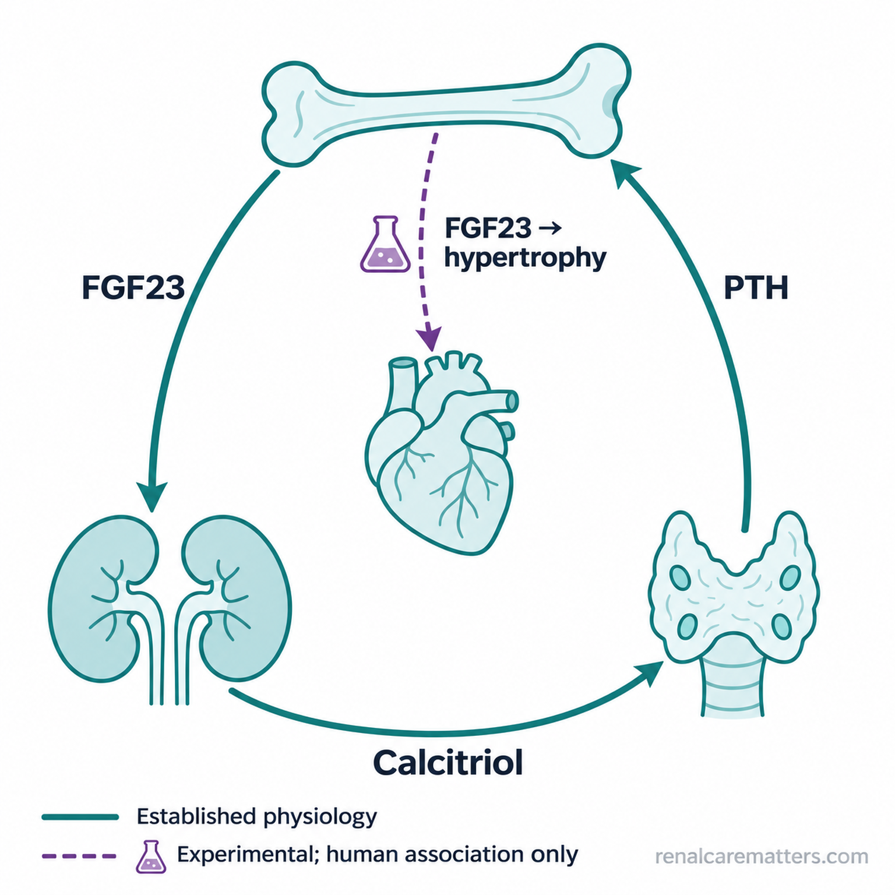
The mineral loop between bone, parathyroid and kidney is established physiology (solid arrows). The arrow from bone to heart is dashed: it is supported by human association and animal experiments, not by treatment trials.
- FGF23
- Fibroblast growth factor 23
- PTH
- Parathyroid hormone
Physiology. FGF23 from bone promotes phosphate excretion through renal signaling that depends on α-Klotho, and suppresses calcitriol. PTH and vitamin D complete the loop across kidney, intestine and bone. As nephron mass falls, FGF23 rises early to maintain phosphate excretion, calcitriol falls, and PTH rises. Established physiology
Reach beyond bone. In 3,879 adults with CKD, higher FGF23 was associated with death (HR 1.5 per standard deviation of log FGF23, 95% CI 1.3 to 1.7; HR 3.0 in the highest versus lowest quartile).24 Human observational In patients starting hemodialysis, FGF23 was associated with a graded increase in mortality.20 Human observational A study combining a human CKD cohort with laboratory work found FGF23 independently associated with left ventricular hypertrophy in people, and showed that FGF23 induced hypertrophy in isolated cardiomyocytes through FGF receptor-dependent calcineurin signaling independent of Klotho, produced hypertrophy when injected into mice, and that an FGF receptor blocker attenuated hypertrophy in a rat CKD model.16 Human observational Experimental
These are two separate lines of evidence, a human association and an experimental mechanism. Neither is a treatment trial. No study has shown that lowering FGF23 improves cardiovascular outcomes, so FGF23 is not a therapeutic target or a routine test.
Practice. The KDIGO 2017 update on CKD-mineral and bone disorder (CKD-MBD) bases treatment on serial assessment of phosphate, calcium and PTH considered together (Not Graded), with alkaline phosphatase where indicated.31 Guideline Act on trends, not single values. See Novel regulators of mineral metabolism and the CKD-MBD calculator.
Bone marrow and immune system: oxygen sensing, iron traffic and inflammation
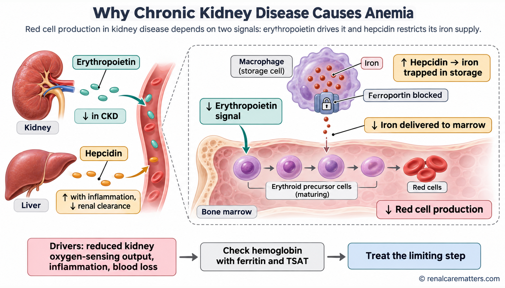
Two signals control red cell production in kidney disease: erythropoietin from the kidney drives it, and hepcidin from the liver restricts the iron it needs. Anemia in chronic kidney disease usually involves both.
- EPO
- Erythropoietin
- TSAT
- Transferrin saturation
- CKD
- Chronic kidney disease
Physiology. Renal oxygen sensing regulates erythropoietin and red cell production. Hepcidin, made in the liver and raised by inflammation and by reduced renal clearance, degrades ferroportin and traps iron in macrophages and enterocytes.6 Established physiology The anemia of CKD is therefore relative erythropoietin deficiency plus iron-restricted erythropoiesis, often with blood loss and other reversible causes on top.
Practice. Pair hemoglobin with ferritin and transferrin saturation (TSAT), and look for other causes before attributing anemia to CKD. KDIGO 2026 separates the decision to start iron from the rule for withholding it during treatment.29 Guideline
| Setting | Iron initiation criteria (KDIGO 2026) | Grade |
|---|---|---|
| CKD G5 on hemodialysis | Ferritin 500 ng/mL or less and TSAT 30% or less | Recommendation 2.1, 2D (a suggestion; very low certainty) |
| CKD not on dialysis, or on peritoneal dialysis | Ferritin under 100 ng/mL with TSAT under 40%, or ferritin 100 to under 300 ng/mL with TSAT under 25% | Recommendation 2.3, 2D |
| Already receiving iron | Withhold routine iron when ferritin is above 700 ng/mL or TSAT is 40% or more; with active systemic infection, apply the guideline's infection precaution before the numbers | Practice point (ungraded) |
The withholding thresholds mirror the proactive arm of PIVOTAL: in 2,141 patients on hemodialysis, proactive high-dose intravenous iron was noninferior for death or cardiovascular events (29.3% versus 32.3%; HR 0.85, 95% CI 0.73 to 1.00) and lowered the dose of erythropoiesis-stimulating agent (ESA).36 Human RCT The iron status calculator applies these criteria; Anemia management in CKD covers treatment.
Immune signaling. Systemic inflammatory signals contribute to kidney injury, and in experimental models injured kidneys release mediators that affect distant tissues.4, 37 Experimental In a patient with sepsis the organ of origin of a circulating cytokine cannot be assigned, which is why anti-cytokine strategies remain unproven for AKI.
Brain and autonomic nervous system
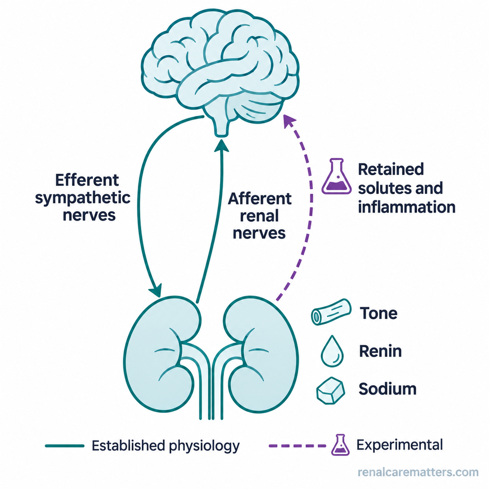
Efferent and afferent renal nerves form an established loop. Inflammatory injury from kidney to brain rests on experimental evidence.
Physiology. Renal sympathetic efferents regulate vascular tone, renin and sodium handling; renal afferents influence central sympathetic activity. Established physiology Brain injury can in turn alter renal perfusion through autonomic and systemic responses.38
Encephalopathy. Severe kidney dysfunction may contribute to encephalopathy through metabolic disturbance and retained solutes. Attribution is difficult because vascular disease, renally cleared drugs, critical illness and delirium are common in the same patients. Experimental AKI studies implicate endothelial and blood-brain barrier injury and neuroinflammation; this has not been shown to be treatable in people.37 Experimental
Practice. For an acute change in mental status, work a differential diagnosis: sodium and glucose, acid-base status, drug accumulation, infection, stroke, and uremia last. Separate established metabolic complications from experimental neuroinflammation. See Kidney-brain axis: cognitive dysfunction in CKD and the 4AT delirium screen.
Skeletal muscle and metabolic organs: what creatinine really measures
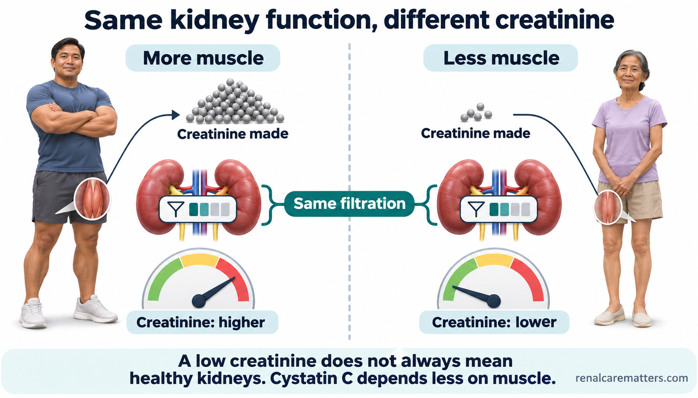
Creatinine is made by muscle. With the same kidney function, a person with less muscle has a lower creatinine, so the number can look better than the kidneys are.
Creatinine is a muscle product. Low muscle mass biases creatinine-based eGFR upward. KDIGO 2024 recommends combined creatinine and cystatin C estimation when creatinine-based eGFR is expected to be less accurate and GFR affects clinical decisions, with attention to the non-GFR determinants of both markers.30 Guideline Equations that combine the two markers were more accurate than creatinine alone against measured GFR.23 Human observational In 734 survivors of hospitalization for moderate to severe coronavirus disease 2019 (COVID-19), those with sarcopenia had lower eGFR but no more albuminuria, a reminder that muscle and creatinine-based eGFR move together for reasons that are not kidney damage.46 Human observational
Steady state matters. An eGFR equation assumes stable creatinine. During AKI or recovery, interpret the creatinine trajectory and urine output, not an eGFR value. The creatinine-cystatin C eGFR and kinetic eGFR calculators address the two situations separately.
Muscle loss in CKD. Metabolic acidosis, inflammation, inactivity, anorexia and impaired insulin signaling activate protein breakdown.61 Experimental Narrative synthesis Correcting acidosis is physiologically attractive, but in the BiCARB trial (300 older adults with CKD and low-grade acidosis) oral sodium bicarbonate did not improve physical performance or eGFR and caused more adverse events.8 Human RCT Mechanism did not translate into benefit in that population.
Muscle to kidney, acutely. Severe muscle injury releases myoglobin, which injures tubules through pigment toxicity, intratubular obstruction and vasoconstriction. Established physiology
Metabolic organs. Diabetes and adipose-derived signals alter renal hemodynamics and inflammation; the CKM framework stages this continuum.41 The shared-therapy trials above are the clinical expression of this axis.
Three cases: same numbers, different pathways
These are synthetic teaching cases. They show how the framework changes the next step; they are not treatment protocols.
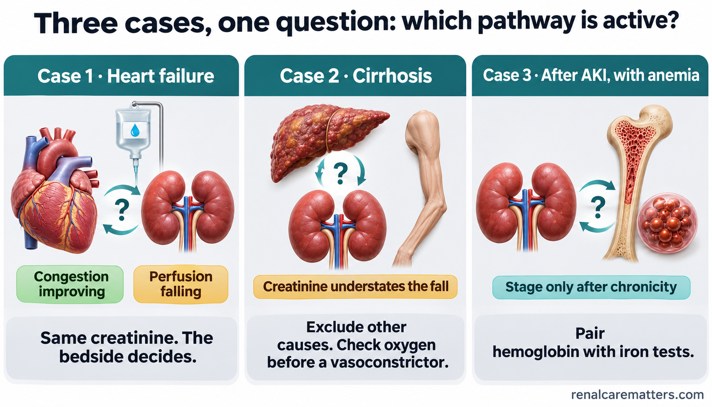
Three teaching cases in which the same laboratory value leads to different next steps.
Calculators and decision aids
Each tool does one job and states its limits. All run in the browser, and none stores or transmits what is entered.
| Tool | Job | Scope and limits | Status |
|---|---|---|---|
| Post-AKI follow-up planner | Turns a documented adult AKI hospitalization into a 3-month reassessment date, due status and checklist | Planning aid. No recovery label, derived stage, risk estimate or medication instruction. Dialysis at discharge overrides the routine list | New with this guide |
| Iron status in CKD | Shows whether ferritin and TSAT meet the KDIGO 2026 iron initiation criteria for the chosen modality, and the withholding rule during treatment | Adults with confirmed CKD and documented anemia. No dose or prescription | Existing; fixtures rechecked |
| VExUS grading worksheet | Documents the original VExUS grade with a criteria trace and an incomplete-data state | Clinician-only, for trained operators. No AKI probability or diuretic advice. Limited in cirrhosis, severe tricuspid regurgitation and ventilation | New with this guide; needs local ultrasound review before clinical use |
| Kidney Failure Risk Equation | Estimates 2-year and 5-year probability of treated kidney failure from age, sex, eGFR and uACR | Adults with stable CKD G3 to G5. KDIGO 2024 practice points use a 5-year risk of 3% to 5% for referral, and 2-year risks above 10% for multidisciplinary care and above 40% for kidney replacement therapy (KRT) preparation.30 Risk was overestimated in some non-North American cohorts until a calibration factor was applied;54 local calibration in Philippine cohorts was not found in the sources reviewed | Existing |
| Creatinine-cystatin C eGFR | Combined estimate when creatinine is less reliable | Steady state only | Existing |
| Fluid overload % and AKI staging | Cumulative fluid balance; KDIGO AKI stage | Describe; do not predict | Existing |
Deferred on purpose. A hepatorenal syndrome criteria worksheet is held for hepatology review. A composite "crosstalk score" or gut toxin index is not offered: it would need a prespecified outcome, a development cohort, external validation, calibration, a plan for missing data, and evidence that its output improves decisions. The studies summarized here answer different questions in different populations and cannot be added together.
Research panel: vesicles, tracing and multi-omics
Three technologies are changing how these questions are asked. None yet changes care.
- Extracellular vesicles. Vesicles carrying proteins and ribonucleic acid (RNA) can move between organs in models. Their tissue of origin in human plasma is usually inferred, not traced.4 Experimental
- Tissue-specific tracing. Cell-specific genetic tools identify which cell releases or receives a signal. Much earlier work relied on whole-body gene deletion, which cannot assign a source organ.4 Experimental
- Single-cell and spatial multi-omics. These map communication between tubular, endothelial, fibroblast and immune cells within the kidney and show maladaptive signaling during the transition from AKI to CKD. A transcriptional signature is a hypothesis about signaling, not a measurement of it.49 Narrative synthesis
For a signal to become a treatment target it needs an identified source, a demonstrated route, target engagement in people, and a trial with patient-important outcomes. By that standard, the proven interventions in this field are still hemodynamic and metabolic, not anti-cytokine or anti-toxin.
Notes for Philippine practice
- Write the date. Follow-up after AKI is commonly lost between the ward and the clinic. Put the 3-month reassessment date and the tests required (creatinine, uACR, blood pressure) in the discharge summary and tell the patient and family.
- Urine albumin. Request a spot uACR where it is available. If only a dipstick is available, record it and arrange a quantitative test when the patient can reach a laboratory that offers one.
- Cystatin C. Where it is a send-out test, reserve it for decisions that depend on GFR in patients with low muscle mass, amputation, cirrhosis or prolonged illness.
- Terlipressin and proactive iron protocols. Confirm availability, cost and monitoring capacity with the hospital pharmacy and dialysis unit before building a pathway.
- Supplements. Ask about herbal "kidney cleanse" products, charcoal and probiotics by name; patients often do not count them as medicines.
Pearls, pitfalls and the mechanism-outcome gap
Pearls
Read a creatinine change with congestion, perfusion, urine output and time course. Measure uACR after AKI. Pair hemoglobin with ferritin and TSAT. Trend calcium, phosphate and PTH together. Use combined creatinine and cystatin C estimation when muscle mass is abnormal and the decision depends on GFR.
Pitfalls
Calling co-occurring organ failure "crosstalk" when a shared insult explains it. Treating a blood level as proof of source. Reporting a relative effect without the absolute one. Carrying a VExUS result from cardiac surgery into a general ICU patient. Extending a trial effect to patients who would not have been eligible. Converting one guideline grading system into another.
Mechanism is not outcome
Lowering indoxyl sulfate absorption did not slow CKD in EPPIC. Correcting low-grade acidosis did not improve function in BiCARB. FGF23 causes cardiac hypertrophy in animals, and no trial shows that lowering it helps patients. Each is a plausible mechanism that has not become a proven treatment.
Evidence review, sortable table and watchlist
Search. PubMed and guideline publishers were searched on November 21, 2026, for interorgan and organ crosstalk, cardiorenal syndrome, venous congestion and VExUS, lung-kidney interaction, hepatorenal syndrome, gut-derived uremic solutes, FGF23, anemia of CKD, post-AKI follow-up and cardiovascular-kidney-metabolic therapy. Every number on this page was checked against the PubMed abstract of the primary source, and guideline statements against the guideline or its publisher's summary. Statements in the hero Summary and the abstract are drawn only from this page.
Quantitative evidence at a glance. Select a column heading to sort.
| Study | Design | Year | Population and endpoint | Result |
|---|---|---|---|---|
| EMPA-KIDNEY56 | RCT | 2023 | 6,609 adults with CKD; kidney progression or cardiovascular death | 13.1% vs 16.9%; HR 0.72 (0.64 to 0.82) |
| ASSESS-AKI22 | Prospective matched cohort | 2020 | 1,538 hospital survivors, 769 with AKI; halving of eGFR or ESKD | HR 1.53 per doubling of uACR (1.45 to 1.62); C statistic 0.82 after AKI |
| CONFIRM62 | RCT | 2021 | 300 adults with type 1 hepatorenal syndrome; verified reversal | 32% vs 17%; respiratory failure 14% vs 5% (label) |
| VExUS derivation7 | Post hoc cohort | 2020 | 145 cardiac surgery patients; AKI | Severe grade HR 3.69 (1.65 to 8.24) |
| VExUS general ICU5 | Prospective cohort | 2023 | 145 ICU patients; AKI | No association (P = 0.136) |
| VExUS meta-analysis33 | Meta-analysis | 2026 | 32 studies, 3,142 patients; AKI | Cardiac OR 4.44 (2.34 to 8.43); critically ill OR 1.45 (0.70 to 2.99) |
| Faul and colleagues16 | Experimental with cohort | 2011 | CKD cohort; cardiomyocytes, mice and rats; left ventricular hypertrophy | Human association; hypertrophy after perturbation |
| SYNERGY48 | RCT (crossover) | 2016 | 37 adults with CKD; serum indoxyl sulfate | −2 µmol/L (−5 to 1), not significant |
| EPPIC50 | RCT | 2015 | 2,035 adults with CKD; dialysis, transplant or creatinine doubling | HR 1.03 and 0.91, no benefit |
| See and colleagues51 | Meta-analysis of cohorts | 2019 | 2,017,437 hospitalized adults; CKD, ESKD, death after AKI | HR 2.67, 4.81, 1.80 |
| FUSION52 | RCT | 2021 | 71 AKI survivors; major adverse kidney events at 1 year | 44% vs 43%; RR 1.02 (0.60 to 1.73) |
| PIVOTAL36 | RCT | 2019 | 2,141 adults on hemodialysis; death or cardiovascular events | 29.3% vs 32.3%; HR 0.85 (0.73 to 1.00) |
| BiCARB8 | RCT | 2020 | 300 older adults with CKD; physical performance | No benefit; more adverse events |
What this review changed from the planning notes. The ASSESS-AKI estimate is given as published in the abstract (95% CI 1.45 to 1.62). The general ICU VExUS result is given for admission scores (P = 0.136). The FGF23 mechanism is described as FGF receptor-dependent, as the cited study reports, without naming a receptor subtype. One planned narrative review of organ crosstalk could not be verified in PubMed and is not cited. Added: the 2026 VExUS meta-analysis and two randomized trials of ultrasound-guided decongestion, the 2026 plant-dominant diet trial, EPPIC, PIVOTAL, BiCARB, the randomized post-AKI follow-up trials, long-term outcome meta-analyses, the shared-therapy trials, and the 2026 ESC and AHA/ACC/ADA/ASN guidelines.
Evidence watchlist. Refresh this page when the KDIGO AKI and AKD guideline is published in final form,32 and at each major guideline release in cardiology, hepatology and nephrology. Clinical review by nephrology is required before any local order set or pathway is built from this page.